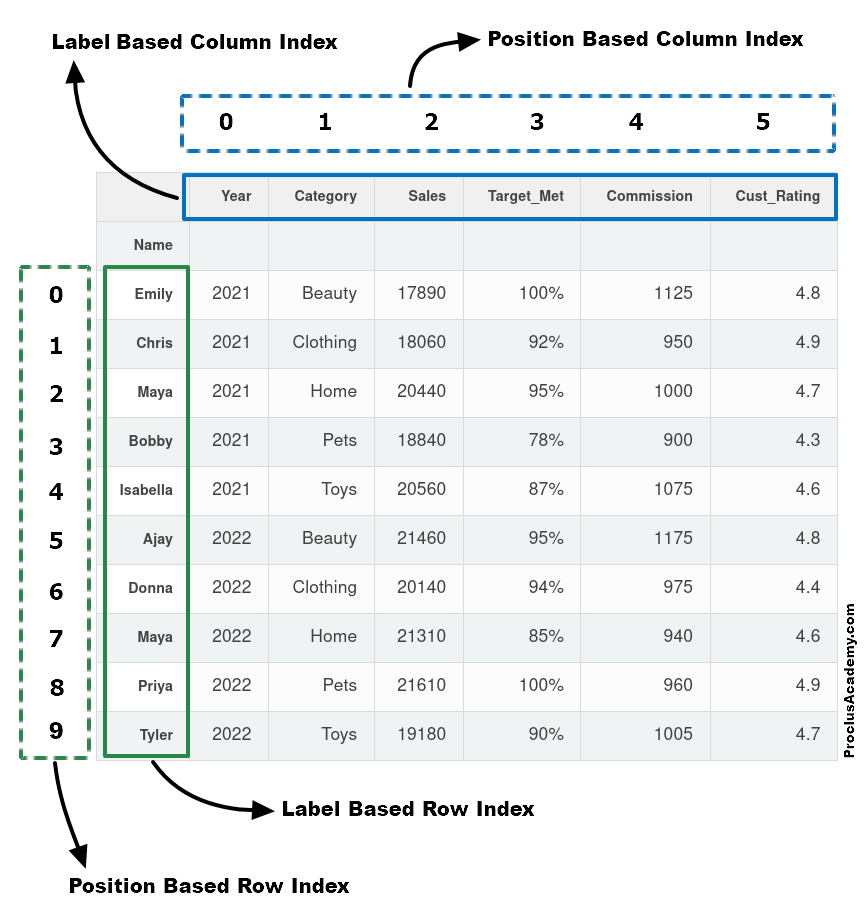

7 Pandas Fundamentals
7.1 Introduction to Pandas Fundamentals
In the Reading Data chapter, we learned how to load data files into pandas DataFrames. Now we’ll dive deeper into pandas’ powerful capabilities for data manipulation and analysis.
Pandas is an essential tool in the data scientist or data analyst’s toolkit due to its ability to handle and transform data with ease and efficiency.
7.1.1 Pandas in the Data Science Ecosystem
Pandas doesn’t work in isolation - it’s designed to integrate seamlessly with other Python libraries:
| Library | Integration with Pandas | Purpose |
|---|---|---|
| NumPy | Built on NumPy arrays | Mathematical operations and array processing |
| Matplotlib | Direct plotting from DataFrames | Data visualization and charts |
| Seaborn | Native DataFrame support | Statistical visualizations |
| Scikit-learn | Seamless data flow | Machine learning algorithms |
| SciPy | Statistical analysis | Advanced statistical functions |
7.1.2 Core Pandas Capabilities
Throughout this chapter, you’ll master these essential pandas operations:
- Creating Series & DataFrames: From Python data structures
- Filtering & Subsetting: Extract exactly the data you need
- Sorting & Ranking: Organize data for analysis
- Adding & Removing: Modify DataFrame structure
- Data Types: Work with different types of data
💡 Learning Path: We’ll start with fundamental concepts and progressively build toward advanced data manipulation techniques, giving you a complete toolkit for real-world data analysis.
Now let’s start by importing the essential Pandas library:
import pandas as pd7.2 Creating Pandas Series & DataFrames
There are two primary approaches for creating pandas data structures, each serving different purposes in your data analysis workflow:
7.2.1 Method 1: Reading from External Data Sources
In real-world data science, you’ll typically work with data stored in external files or databases. This is the most common approach for production analysis.
Popular Data Sources:
| Source Type | Pandas Function | Use Case |
|---|---|---|
| CSV Files | pd.read_csv() |
Most common - structured tabular data |
| Excel Files | pd.read_excel() |
Business data, reports with multiple sheets |
| JSON Files | pd.read_json() |
API data, web services, nested data |
| SQL Databases | pd.read_sql() |
Enterprise databases, large datasets |
| HTML Tables | pd.read_html() |
Web scraping, online data tables |
💡 Pro Tip: We covered these methods extensively in the Reading Data chapter. If you need a refresher on loading external data, refer back to that section!
7.2.2 Method 2: Creating from Python Data Structures
When you need to create data programmatically or work with small datasets for testing and learning, you can build DataFrames and Series directly from Python objects.
Benefits of this approach:
- Testing & Learning: Perfect for experimenting with pandas features
- Data Generation: Create synthetic data for analysis
- Small Datasets: Handle simple, manual data entry
- Prototyping: Quick data structure creation for proof-of-concepts
Let’s explore how to create pandas data structures from scratch!
7.2.2.1 Creating Series from Python Data Structures
A Series is pandas’ 1D data structure - think of it as a smart, labeled list or array.
7.2.2.1.1 Method A: From a Python List
The simplest way to create a Series is from a Python list. Pandas automatically assigns integer indices starting from 0.
#Defining a Pandas Series
series_example = pd.Series(['these','are','english','words'])
series_example0 these
1 are
2 english
3 words
dtype: object🔍 Key Observation: Notice the automatic integer indices (0, 1, 2, 3) on the left!
Custom Indexing: You can provide meaningful labels instead of default numbers using the index parameter:
#Defining a Pandas Series with custom row labels
series_example = pd.Series(['these','are','english','words'], index = range(101,105))
series_example101 these
102 are
103 english
104 words
dtype: object7.2.2.1.2 Method B: From a Python Dictionary
Dictionaries are perfect for creating Series with meaningful labels. The dictionary keys automatically become the Series index, and values become the data points.
Perfect for: Time series data, named categories, any key-value relationships
# 📊 Real-world example: US GDP per capita by year (1960-2021)
# Notice some years are missing - pandas handles this gracefully!
GDP_per_capita_dict = {'1960':3007,'1961':3067,'1962':3244,'1963':3375,'1964':3574,'1965':3828,'1966':4146,'1967':4336,'1968':4696,'1970':5234,'1971':5609,'1972':6094,'1973':6726,'1974':7226,'1975':7801,'1976':8592,'1978':10565,'1979':11674, '1980':12575,'1981':13976,'1982':14434,'1983':15544,'1984':17121,'1985':18237, '1986':19071,'1987':20039,'1988':21417,'1989':22857,'1990':23889,'1991':24342, '1992':25419,'1993':26387,'1994':27695,'1995':28691,'1996':29968,'1997':31459, '1998':32854,'2000':36330,'2001':37134,'2002':37998,'2003':39490,'2004':41725, '2005':44123,'2006':46302,'2007':48050,'2008':48570,'2009':47195,'2010':48651, '2011':50066,'2012':51784,'2013':53291,'2015':56763,'2016':57867,'2017':59915,'2018':62805, '2019':65095,'2020':63028,'2021':69288}#Example 2: Creating a Pandas Series from a Dictionary
GDP_per_capita_series = pd.Series(GDP_per_capita_dict)
GDP_per_capita_series.head()1960 3007
1961 3067
1962 3244
1963 3375
1964 3574
dtype: int647.2.2.2 Creating a DataFrame from Python Data Structures
7.2.2.2.1 Method A: From a list of Python Dictionary
You can create a DataFrame where keys are column names and values are lists representing column data.
#List of dictionary consisting of 52 playing cards of the deck
deck_list_of_dictionaries = [{'value':i, 'suit':c}
for c in ['spades', 'clubs', 'hearts', 'diamonds']
for i in range(2,15)]#Example 3: Creating a Pandas DataFrame from a List of dictionaries
deck_df = pd.DataFrame(deck_list_of_dictionaries)
deck_df.head()| value | suit | |
|---|---|---|
| 0 | 2 | spades |
| 1 | 3 | spades |
| 2 | 4 | spades |
| 3 | 5 | spades |
| 4 | 6 | spades |
7.2.2.2.2 Method B: From a Python Dictionary
You can create a DataFrame where keys are column names and values are lists representing column data.
#Example 4: Creating a Pandas DataFrame from a Dictionary
dict_data = {'A': [1, 2, 3, 4, 5],
'B': [20, 10, 50, 40, 30],
'C': [100, 200, 300, 400, 500]}
dict_df = pd.DataFrame(dict_data)
dict_df| A | B | C | |
|---|---|---|---|
| 0 | 1 | 20 | 100 |
| 1 | 2 | 10 | 200 |
| 2 | 3 | 50 | 300 |
| 3 | 4 | 40 | 400 |
| 4 | 5 | 30 | 500 |
7.3 Data Selection and Filtering
Now that you understand series and dataframe are two foundamental data structures in pandas, let’s master the art of extracting exactly the data you need. Data selection and filtering are fundamental skills that you’ll use in every pandas project.
7.3.1 Basic Selection
7.3.1.1 Extracting Column(s)
The first step when working with a DataFrame is often to extract one or more columns. To do this effectively, it’s helpful to understand the internal structure of a DataFrame. Conceptually, you can think of a DataFrame as a dictionary of lists, where the keys are column names, and the values are lists or arrays containing data for the respective columns.
Loading Our Practice Dataset
Let’s work with a real movie ratings dataset to practice our selection techniques:
import pandas as pd
movie_ratings = pd.read_csv('./datasets/movie_ratings.csv')
movie_ratings.head()| Title | US Gross | Worldwide Gross | Production Budget | Release Date | MPAA Rating | Source | Major Genre | Creative Type | IMDB Rating | IMDB Votes | |
|---|---|---|---|---|---|---|---|---|---|---|---|
| 0 | Opal Dreams | 14443 | 14443 | 9000000 | Nov 22 2006 | PG/PG-13 | Adapted screenplay | Drama | Fiction | 6.5 | 468 |
| 1 | Major Dundee | 14873 | 14873 | 3800000 | Apr 07 1965 | PG/PG-13 | Adapted screenplay | Western/Musical | Fiction | 6.7 | 2588 |
| 2 | The Informers | 315000 | 315000 | 18000000 | Apr 24 2009 | R | Adapted screenplay | Horror/Thriller | Fiction | 5.2 | 7595 |
| 3 | Buffalo Soldiers | 353743 | 353743 | 15000000 | Jul 25 2003 | R | Adapted screenplay | Comedy | Fiction | 6.9 | 13510 |
| 4 | The Last Sin Eater | 388390 | 388390 | 2200000 | Feb 09 2007 | PG/PG-13 | Adapted screenplay | Drama | Fiction | 5.7 | 1012 |
7.3.1.1.1 Method 1: Single Column Extraction
Each column represents a feature of your data. There are two ways to extract a single column:
A) Bracket Notation: df['column_name'] (Recommended)
- ✅ Always works
- ✅ Handles column names with spaces
- ✅ Clear and explicit
B) Dot Notation: df.column_name (Limited use)
- ❌ Fails with spaces in column names
- ❌ Conflicts with DataFrame methods
- ✅ Shorter syntax for simple names
movie_ratings.Title0 Opal Dreams
1 Major Dundee
2 The Informers
3 Buffalo Soldiers
4 The Last Sin Eater
...
2223 King Arthur
2224 Mulan
2225 Robin Hood
2226 Robin Hood: Prince of Thieves
2227 Spiceworld
Name: Title, Length: 2228, dtype: object# 🧠 Understanding the DataFrame structure:
# DataFrames work like dictionaries with enhanced features!
movie_ratings_dict = {
'Title': ['Opal Dreams', 'Major Dundee', 'The Informers', 'Buffalo Soldiers', 'The Last Sin Eater'],
'US Gross': [14443, 14873, 315000, 353743, 388390],
'Worldwide Gross': [14443, 14873, 315000, 353743, 388390],
'Production Budget': [9000000, 3800000, 18000000, 15000000, 2200000]
}Dictionary Analogy:
Just like accessing dictionary values by key:
movie_ratings_dict['Title']['Opal Dreams',
'Major Dundee',
'The Informers',
'Buffalo Soldiers',
'The Last Sin Eater']DataFrame Column Extraction:
Similarly, we extract DataFrame columns by column name:
movie_ratings['Title']0 Opal Dreams
1 Major Dundee
2 The Informers
3 Buffalo Soldiers
4 The Last Sin Eater
...
2223 King Arthur
2224 Mulan
2225 Robin Hood
2226 Robin Hood: Prince of Thieves
2227 Spiceworld
Name: Title, Length: 2228, dtype: object7.3.1.1.2 Method 2: Multiple Column Selection
Key Rule: Use a list of column names inside the brackets:
# Single column → Series
df['column']
# Multiple columns → DataFrame
df[['col1', 'col2']]🔍 Notice: Double brackets [[]] create a list, which tells pandas you want multiple columns!
movie_ratings[['Title', 'US Gross', 'Worldwide Gross' ]]| Title | US Gross | Worldwide Gross | |
|---|---|---|---|
| 0 | Opal Dreams | 14443 | 14443 |
| 1 | Major Dundee | 14873 | 14873 |
| 2 | The Informers | 315000 | 315000 |
| 3 | Buffalo Soldiers | 353743 | 353743 |
| 4 | The Last Sin Eater | 388390 | 388390 |
| ... | ... | ... | ... |
| 2223 | King Arthur | 51877963 | 203877963 |
| 2224 | Mulan | 120620254 | 303500000 |
| 2225 | Robin Hood | 105269730 | 310885538 |
| 2226 | Robin Hood: Prince of Thieves | 165493908 | 390500000 |
| 2227 | Spiceworld | 29342592 | 56042592 |
2228 rows × 3 columns
7.3.1.2 Extracting Row(s)
In many cases, we need to filter rows based on specific conditions or a combination of multiple conditions. Next, let’s explore how to use these conditions effectively to extract rows that meet our criteria, whether it’s a single condition or multiple conditions combined
7.3.1.2.1 Single Condition Filtering
Filter rows in a DataFrame based on one logical condition.
This is the most common way to extract a subset of data, such as selecting all rows where a column’s values meet a specific criterion (e.g., greater than, equal to, not equal).
For Example:
# extracting the rows that have IMDB Rating greater than 8
movie_ratings[movie_ratings['IMDB Rating'] > 8]| Title | US Gross | Worldwide Gross | Production Budget | Release Date | MPAA Rating | Source | Major Genre | Creative Type | IMDB Rating | IMDB Votes | |
|---|---|---|---|---|---|---|---|---|---|---|---|
| 21 | Gandhi, My Father | 240425 | 1375194 | 5000000 | Aug 03 2007 | Other | Adapted screenplay | Drama | Non-Fiction | 8.1 | 50881 |
| 56 | Ed Wood | 5828466 | 5828466 | 18000000 | Sep 30 1994 | R | Adapted screenplay | Comedy | Non-Fiction | 8.1 | 74171 |
| 67 | Requiem for a Dream | 3635482 | 7390108 | 4500000 | Oct 06 2000 | Other | Adapted screenplay | Drama | Fiction | 8.5 | 185226 |
| 164 | Trainspotting | 16501785 | 24000785 | 3100000 | Jul 19 1996 | R | Adapted screenplay | Drama | Fiction | 8.2 | 150483 |
| 181 | The Wizard of Oz | 28202232 | 28202232 | 2777000 | Aug 25 2039 | G | Adapted screenplay | Western/Musical | Fiction | 8.3 | 102795 |
| ... | ... | ... | ... | ... | ... | ... | ... | ... | ... | ... | ... |
| 2090 | Finding Nemo | 339714978 | 867894287 | 94000000 | May 30 2003 | G | Original Screenplay | Action/Adventure | Fiction | 8.2 | 165006 |
| 2092 | Toy Story 3 | 410640665 | 1046340665 | 200000000 | Jun 18 2010 | G | Original Screenplay | Action/Adventure | Fiction | 8.9 | 67380 |
| 2094 | Avatar | 760167650 | 2767891499 | 237000000 | Dec 18 2009 | PG/PG-13 | Original Screenplay | Action/Adventure | Fiction | 8.3 | 261439 |
| 2130 | Scarface | 44942821 | 44942821 | 25000000 | Dec 09 1983 | Other | Adapted screenplay | Drama | Fiction | 8.2 | 152262 |
| 2194 | The Departed | 133311000 | 290539042 | 90000000 | Oct 06 2006 | R | Adapted screenplay | Drama | Fiction | 8.5 | 264148 |
97 rows × 11 columns
7.3.1.2.2 Multiple Conditions Filtering
When filtering with more than one condition, use logical operators:
| Operator | Purpose | Example |
|---|---|---|
& |
AND – both conditions must be True | (df['A'] > 5) & (df['B'] < 10) |
\| |
OR – at least one condition must be True | (df['A'] > 5) \| (df['B'] < 10) |
~ |
NOT – negates the condition | ~(df['A'] > 5) |
🚨 Important Rule: Always wrap each condition in parentheses () to avoid operator precedence errors.
# extracting the rows that have IMDB Rating greater than 8 and US Gross less than 1000000
movie_ratings[(movie_ratings['IMDB Rating'] > 8) & (movie_ratings['US Gross'] < 1000000)]| Title | US Gross | Worldwide Gross | Production Budget | Release Date | MPAA Rating | Source | Major Genre | Creative Type | IMDB Rating | IMDB Votes | |
|---|---|---|---|---|---|---|---|---|---|---|---|
| 21 | Gandhi, My Father | 240425 | 1375194 | 5000000 | Aug 03 2007 | Other | Adapted screenplay | Drama | Non-Fiction | 8.1 | 50881 |
| 636 | Lake of Fire | 25317 | 25317 | 6000000 | Oct 03 2007 | Other | Adapted screenplay | Documentary | Non-Fiction | 8.4 | 1027 |
7.3.1.2.3 Negating Conditions with the ~ Operator
The tilde (~) operator in pandas is used to negate boolean conditions, making it especially useful when you want to exclude certain rows.
Instead of selecting rows that satisfy a condition, ~ allows you to filter rows that do not meet that condition. This is helpful for refining queries and focusing on the remaining data.
For example, if you want all rows where IMDB Rating is not equal to 8, you can write:
# Excluding the rows that have IMDB Rating that equals 8 using the tilde ~
movie_ratings[~(movie_ratings['IMDB Rating'] == 8)]| Title | US Gross | Worldwide Gross | Production Budget | Release Date | MPAA Rating | Source | Major Genre | Creative Type | IMDB Rating | IMDB Votes | |
|---|---|---|---|---|---|---|---|---|---|---|---|
| 0 | Opal Dreams | 14443 | 14443 | 9000000 | Nov 22 2006 | PG/PG-13 | Adapted screenplay | Drama | Fiction | 6.5 | 468 |
| 1 | Major Dundee | 14873 | 14873 | 3800000 | Apr 07 1965 | PG/PG-13 | Adapted screenplay | Western/Musical | Fiction | 6.7 | 2588 |
| 2 | The Informers | 315000 | 315000 | 18000000 | Apr 24 2009 | R | Adapted screenplay | Horror/Thriller | Fiction | 5.2 | 7595 |
| 3 | Buffalo Soldiers | 353743 | 353743 | 15000000 | Jul 25 2003 | R | Adapted screenplay | Comedy | Fiction | 6.9 | 13510 |
| 4 | The Last Sin Eater | 388390 | 388390 | 2200000 | Feb 09 2007 | PG/PG-13 | Adapted screenplay | Drama | Fiction | 5.7 | 1012 |
| ... | ... | ... | ... | ... | ... | ... | ... | ... | ... | ... | ... |
| 2223 | King Arthur | 51877963 | 203877963 | 90000000 | Jul 07 2004 | PG/PG-13 | Adapted screenplay | Action/Adventure | Fiction | 6.2 | 53106 |
| 2224 | Mulan | 120620254 | 303500000 | 90000000 | Jun 19 1998 | G | Adapted screenplay | Action/Adventure | Non-Fiction | 7.2 | 34256 |
| 2225 | Robin Hood | 105269730 | 310885538 | 210000000 | May 14 2010 | PG/PG-13 | Adapted screenplay | Action/Adventure | Fiction | 6.9 | 34501 |
| 2226 | Robin Hood: Prince of Thieves | 165493908 | 390500000 | 50000000 | Jun 14 1991 | PG/PG-13 | Adapted screenplay | Action/Adventure | Fiction | 6.7 | 54480 |
| 2227 | Spiceworld | 29342592 | 56042592 | 25000000 | Jan 23 1998 | PG/PG-13 | Adapted screenplay | Comedy | Fiction | 2.9 | 18010 |
2191 rows × 11 columns
Alternative: Using !=
Another way to exclude rows where a column equals a certain value is to use the not-equal operator !=:
# using the != operator
movie_ratings[movie_ratings['IMDB Rating'] != 8]| Title | US Gross | Worldwide Gross | Production Budget | Release Date | MPAA Rating | Source | Major Genre | Creative Type | IMDB Rating | IMDB Votes | |
|---|---|---|---|---|---|---|---|---|---|---|---|
| 0 | Opal Dreams | 14443 | 14443 | 9000000 | Nov 22 2006 | PG/PG-13 | Adapted screenplay | Drama | Fiction | 6.5 | 468 |
| 1 | Major Dundee | 14873 | 14873 | 3800000 | Apr 07 1965 | PG/PG-13 | Adapted screenplay | Western/Musical | Fiction | 6.7 | 2588 |
| 2 | The Informers | 315000 | 315000 | 18000000 | Apr 24 2009 | R | Adapted screenplay | Horror/Thriller | Fiction | 5.2 | 7595 |
| 3 | Buffalo Soldiers | 353743 | 353743 | 15000000 | Jul 25 2003 | R | Adapted screenplay | Comedy | Fiction | 6.9 | 13510 |
| 4 | The Last Sin Eater | 388390 | 388390 | 2200000 | Feb 09 2007 | PG/PG-13 | Adapted screenplay | Drama | Fiction | 5.7 | 1012 |
| ... | ... | ... | ... | ... | ... | ... | ... | ... | ... | ... | ... |
| 2223 | King Arthur | 51877963 | 203877963 | 90000000 | Jul 07 2004 | PG/PG-13 | Adapted screenplay | Action/Adventure | Fiction | 6.2 | 53106 |
| 2224 | Mulan | 120620254 | 303500000 | 90000000 | Jun 19 1998 | G | Adapted screenplay | Action/Adventure | Non-Fiction | 7.2 | 34256 |
| 2225 | Robin Hood | 105269730 | 310885538 | 210000000 | May 14 2010 | PG/PG-13 | Adapted screenplay | Action/Adventure | Fiction | 6.9 | 34501 |
| 2226 | Robin Hood: Prince of Thieves | 165493908 | 390500000 | 50000000 | Jun 14 1991 | PG/PG-13 | Adapted screenplay | Action/Adventure | Fiction | 6.7 | 54480 |
| 2227 | Spiceworld | 29342592 | 56042592 | 25000000 | Jan 23 1998 | PG/PG-13 | Adapted screenplay | Comedy | Fiction | 2.9 | 18010 |
2191 rows × 11 columns
7.3.2 Advanced Selection: .loc[] and .iloc[]
When you need precise control over both rows and columns, pandas provides two powerful indexers that let you select exactly what you need.
7.3.2.1 .loc[] vs .iloc[]: The Key Difference
| Indexer | Uses | Best For | Example |
|---|---|---|---|
.loc[] |
Labels (names) | Human-readable selection | df.loc['row_name', 'column_name'] |
.iloc[] |
Positions (numbers) | Programmatic selection | df.iloc[0, 1] |
Mental Model
Think of your DataFrame like a spreadsheet:
.loc[]works like clicking on named rows/columns (A1, B2, etc.).iloc[]works like clicking on position numbers (row 0, column 1, etc.)
💡 Memory Tip:
loc= Labels/Location namesiloc= integer locations
Preparing Our Data: Sorting by IMDB Rating
To demonstrate .loc[] and .iloc[] effectively, let’s first sort our movies by rating so we can easily select the best ones:
movie_ratings_sorted = movie_ratings.sort_values(by = 'IMDB Rating', ascending = False)
movie_ratings_sorted.head()| Title | US Gross | Worldwide Gross | Production Budget | Release Date | MPAA Rating | Source | Major Genre | Creative Type | IMDB Rating | IMDB Votes | |
|---|---|---|---|---|---|---|---|---|---|---|---|
| 182 | The Shawshank Redemption | 28241469 | 28241469 | 25000000 | Sep 23 1994 | R | Adapted screenplay | Drama | Fiction | 9.2 | 519541 |
| 2084 | Inception | 285630280 | 753830280 | 160000000 | Jul 16 2010 | PG/PG-13 | Original Screenplay | Horror/Thriller | Fiction | 9.1 | 188247 |
| 790 | Schindler's List | 96067179 | 321200000 | 25000000 | Dec 15 1993 | R | Adapted screenplay | Drama | Non-Fiction | 8.9 | 276283 |
| 1962 | Pulp Fiction | 107928762 | 212928762 | 8000000 | Oct 14 1994 | R | Original Screenplay | Drama | Fiction | 8.9 | 417703 |
| 561 | The Dark Knight | 533345358 | 1022345358 | 185000000 | Jul 18 2008 | PG/PG-13 | Adapted screenplay | Action/Adventure | Fiction | 8.9 | 465000 |
7.3.2.2 Using .loc[] - Label-Based Selection
Syntax: df.loc[row_indexer, column_indexer]
Key Features:
- Uses actual labels (index names, column names)
- Inclusive of both endpoints in slicing
- Can combine with boolean conditions
- Most intuitive for data analysis
Example: Let’s subset the Title, Worldwide Gross, Production Budget, and IMDB Rating of the top 3 movies using specific row indices that obtained from the above sorting table.
# 📍 Select specific rows by index and specific columns by name
movies_subset = movie_ratings_sorted.loc[[182, 2084, 790], ['Title', 'IMDB Rating', 'US Gross', 'Worldwide Gross', 'Production Budget']]
print("🎬 Selected movies with key financial and rating data:")
movies_subset🎬 Selected movies with key financial and rating data:| Title | IMDB Rating | US Gross | Worldwide Gross | Production Budget | |
|---|---|---|---|---|---|
| 182 | The Shawshank Redemption | 9.2 | 28241469 | 28241469 | 25000000 |
| 2084 | Inception | 9.1 | 285630280 | 753830280 | 160000000 |
| 790 | Schindler's List | 8.9 | 96067179 | 321200000 | 25000000 |
The : symbol in .loc is a slicing operator that represents a range or all elements in the specified dimension (rows or columns). Use : alone to select all rows/columns, or with start/end points to slice specific parts of the DataFrame.
# 📊 Select ALL rows (:) but only specific columns
movies_subset = movie_ratings_sorted.loc[:, ['Title', 'Worldwide Gross', 'Production Budget', 'IMDB Rating']]
print(" All movies with financial and rating columns only:")
movies_subset All movies with financial and rating columns only:| Title | Worldwide Gross | Production Budget | IMDB Rating | |
|---|---|---|---|---|
| 182 | The Shawshank Redemption | 28241469 | 25000000 | 9.2 |
| 2084 | Inception | 753830280 | 160000000 | 9.1 |
| 790 | Schindler's List | 321200000 | 25000000 | 8.9 |
| 1962 | Pulp Fiction | 212928762 | 8000000 | 8.9 |
| 561 | The Dark Knight | 1022345358 | 185000000 | 8.9 |
| ... | ... | ... | ... | ... |
| 1051 | Glitter | 4273372 | 8500000 | 2.0 |
| 1495 | Disaster Movie | 34690901 | 20000000 | 1.7 |
| 1116 | Crossover | 7009668 | 5600000 | 1.7 |
| 805 | From Justin to Kelly | 4922166 | 12000000 | 1.6 |
| 1147 | Super Babies: Baby Geniuses 2 | 9109322 | 20000000 | 1.4 |
2228 rows × 4 columns
# 📏 Select a RANGE of rows (182 to 561) and specific columns
movies_subset = movie_ratings_sorted.loc[182:561, ['Title', 'Worldwide Gross', 'Production Budget', 'IMDB Rating']]
print("Movies from index 182 to 561 (inclusive):")
movies_subsetMovies from index 182 to 561 (inclusive):| Title | Worldwide Gross | Production Budget | IMDB Rating | |
|---|---|---|---|---|
| 182 | The Shawshank Redemption | 28241469 | 25000000 | 9.2 |
| 2084 | Inception | 753830280 | 160000000 | 9.1 |
| 790 | Schindler's List | 321200000 | 25000000 | 8.9 |
| 1962 | Pulp Fiction | 212928762 | 8000000 | 8.9 |
| 561 | The Dark Knight | 1022345358 | 185000000 | 8.9 |
7.3.2.3 Combining .loc with Boolean Conditions
Power Move: Filter rows AND select columns simultaneously using boolean logic!
# extracting the rows that have IMDB Rating greater than 8 or US Gross less than 1000000, only extract the Title and IMDB Rating columns
movie_ratings[(movie_ratings['IMDB Rating'] > 8) & (movie_ratings['US Gross'] < 1000000)][['Title','IMDB Rating']]
#using loc to extract the rows that have IMDB Rating greater than 8 or US Gross less than 1000000, only extract the Title and IMDB Rating columns
movie_ratings.loc[(movie_ratings['IMDB Rating'] > 8) & (movie_ratings['US Gross'] < 1000000),['Title','IMDB Rating']]| Title | IMDB Rating | |
|---|---|---|
| 21 | Gandhi, My Father | 8.1 |
| 636 | Lake of Fire | 8.4 |
7.3.2.4 Using .iloc[] - Position-Based Selection
Syntax: df.iloc[row_positions, column_positions]
Key Features:
- Uses integer positions (0-based indexing like Python lists)
- Exclusive of end point in slicing (like Python slicing)
- Great for systematic sampling or first/last N records
- Think:
integer location
| Position Type | Example | Description |
|---|---|---|
| Single | df.iloc[0, 1] |
First row, second column |
| List | df.iloc[[0, 2], [1, 3]] |
Specific positions |
| Slice | df.iloc[0:3, 1:4] |
Range (exclusive end) |
| All | df.iloc[:, :] |
All rows and columns |
💡 Memory Tip:
- iloc = integer positions,
- loc = label names

# let's check the movie_ratings_sorted DataFrame
movie_ratings_sorted.head()| Title | US Gross | Worldwide Gross | Production Budget | Release Date | MPAA Rating | Source | Major Genre | Creative Type | IMDB Rating | IMDB Votes | |
|---|---|---|---|---|---|---|---|---|---|---|---|
| 182 | The Shawshank Redemption | 28241469 | 28241469 | 25000000 | Sep 23 1994 | R | Adapted screenplay | Drama | Fiction | 9.2 | 519541 |
| 2084 | Inception | 285630280 | 753830280 | 160000000 | Jul 16 2010 | PG/PG-13 | Original Screenplay | Horror/Thriller | Fiction | 9.1 | 188247 |
| 790 | Schindler's List | 96067179 | 321200000 | 25000000 | Dec 15 1993 | R | Adapted screenplay | Drama | Non-Fiction | 8.9 | 276283 |
| 1962 | Pulp Fiction | 107928762 | 212928762 | 8000000 | Oct 14 1994 | R | Original Screenplay | Drama | Fiction | 8.9 | 417703 |
| 561 | The Dark Knight | 533345358 | 1022345358 | 185000000 | Jul 18 2008 | PG/PG-13 | Adapted screenplay | Action/Adventure | Fiction | 8.9 | 465000 |
After sorting, the position-based index changes, while the label-based index remains unchanged. Let’s pass the position-based index to iloc to retrieve the top 2 rows from the movie_ratings_sorted DataFrame.
# 🏆 Get first 2 rows by POSITION (0 and 1), all columns
top_2_movies = movie_ratings_sorted.iloc[0:2, :]
print(" Top 2 movies by position:")
top_2_movies Top 2 movies by position:
| Title | US Gross | Worldwide Gross | Production Budget | Release Date | MPAA Rating | Source | Major Genre | Creative Type | IMDB Rating | IMDB Votes | |
|---|---|---|---|---|---|---|---|---|---|---|---|
| 182 | The Shawshank Redemption | 28241469 | 28241469 | 25000000 | Sep 23 1994 | R | Adapted screenplay | Drama | Fiction | 9.2 | 519541 |
| 2084 | Inception | 285630280 | 753830280 | 160000000 | Jul 16 2010 | PG/PG-13 | Original Screenplay | Horror/Thriller | Fiction | 9.1 | 188247 |
It is important to note that the endpoint is excluded in an iloc slice.
For comparison, let’s pass the same argument to loc and see what it returns.
# 🔍 Same range [0:2] with loc - uses LABELS, includes endpoint
loc_result = movie_ratings_sorted.loc[0:2, :]
print(" Using .loc[0:2,:] - includes rows with labels 0, 1, AND 2:")
loc_result Using .loc[0:2,:] - includes rows with labels 0, 1, AND 2:
| Title | US Gross | Worldwide Gross | Production Budget | Release Date | MPAA Rating | Source | Major Genre | Creative Type | IMDB Rating | IMDB Votes | |
|---|---|---|---|---|---|---|---|---|---|---|---|
| 0 | Opal Dreams | 14443 | 14443 | 9000000 | Nov 22 2006 | PG/PG-13 | Adapted screenplay | Drama | Fiction | 6.5 | 468 |
| 851 | Star Trek: Generations | 75671262 | 120000000 | 38000000 | Nov 18 1994 | PG/PG-13 | Adapted screenplay | Action/Adventure | Fiction | 6.5 | 26465 |
| 140 | Tuck Everlasting | 19161999 | 19344615 | 15000000 | Oct 11 2002 | PG/PG-13 | Adapted screenplay | Drama | Fiction | 6.5 | 6639 |
| 708 | De-Lovely | 13337299 | 18396382 | 4000000 | Jun 25 2004 | PG/PG-13 | Adapted screenplay | Drama | Fiction | 6.5 | 6086 |
| 705 | Flyboys | 13090630 | 14816379 | 60000000 | Sep 22 2006 | PG/PG-13 | Adapted screenplay | Drama | Non-Fiction | 6.5 | 13934 |
| ... | ... | ... | ... | ... | ... | ... | ... | ... | ... | ... | ... |
| 955 | The Brothers Solomon | 900926 | 900926 | 10000000 | Sep 07 2007 | R | Original Screenplay | Comedy | Fiction | 5.2 | 6044 |
| 1637 | Drumline | 56398162 | 56398162 | 20000000 | Dec 13 2002 | PG/PG-13 | Original Screenplay | Comedy | Fiction | 5.2 | 18165 |
| 1610 | Hollywood Homicide | 30207785 | 51107785 | 75000000 | Jun 13 2003 | PG/PG-13 | Original Screenplay | Action/Adventure | Fiction | 5.2 | 16452 |
| 569 | Doom | 28212337 | 54612337 | 70000000 | Oct 21 2005 | R | Adapted screenplay | Horror/Thriller | Fiction | 5.2 | 39473 |
| 2 | The Informers | 315000 | 315000 | 18000000 | Apr 24 2009 | R | Adapted screenplay | Horror/Thriller | Fiction | 5.2 | 7595 |
812 rows × 11 columns
As you can see, : is used in the same way as in loc to denote a range of the index. All rows between label indices 0 and 2, inclusive of both ends, are returned.
# 🎯 Select first 10 rows and specific column positions [0, 2, 3, 9]
movies_iloc_subset = movie_ratings_sorted.iloc[0:10, [0, 2, 3, 9]]
print("📋 First 10 movies with columns at positions 0, 2, 3, 9:")
movies_iloc_subset📋 First 10 movies with columns at positions 0, 2, 3, 9:| Title | Worldwide Gross | Production Budget | IMDB Rating | |
|---|---|---|---|---|
| 182 | The Shawshank Redemption | 28241469 | 25000000 | 9.2 |
| 2084 | Inception | 753830280 | 160000000 | 9.1 |
| 790 | Schindler's List | 321200000 | 25000000 | 8.9 |
| 1962 | Pulp Fiction | 212928762 | 8000000 | 8.9 |
| 561 | The Dark Knight | 1022345358 | 185000000 | 8.9 |
| 2092 | Toy Story 3 | 1046340665 | 200000000 | 8.9 |
| 487 | The Lord of the Rings: The Fellowship of the Ring | 868621686 | 109000000 | 8.8 |
| 335 | Fight Club | 100853753 | 65000000 | 8.8 |
| 497 | The Lord of the Rings: The Return of the King | 1133027325 | 94000000 | 8.8 |
| 1081 | C'era una volta il West | 5321508 | 5000000 | 8.8 |
🤔 Critical Thinking Question: Can you use .iloc for conditional filtering (like df.iloc[df['column'] > 5])?
Answer: ❌ No! .iloc only accepts integer positions, not boolean conditions. For conditional filtering, you must use .loc or boolean indexing directly.
7.3.2.5 Summary: .loc vs .iloc - Choose Your Weapon!
| Feature | .loc (Label-Based) |
.iloc (Position-Based) |
|---|---|---|
| Uses | 🏷️ Labels/Names | 🔢 Integer Positions |
| Slicing | [start:end] includes end |
[start:end] excludes end |
| Examples | df.loc['row_name', 'col_name'] |
df.iloc[0, 1] |
| Conditions | ✅ df.loc[df['col'] > 5] |
❌ No boolean conditions |
| Best For | Business logic filtering | Systematic sampling |
Mental Model:
.loc=Give me the data by name/label
.iloc=Give me the data by position number
7.3.3 Finding Extremes in pandas: Values, Labels, and Positions
7.3.3.1 Finding extreme values
When you need to find extreme values, pandas offers powerful methods:
| Method | Purpose | Returns |
|---|---|---|
min() |
📉 Actual minimum value | The minimum value itself |
max() |
📈 Actual maximum value | The maximum value itself |
# find the max/min worldwide gross
max_gross = max(movie_ratings["Worldwide Gross"])
min_gross = min(movie_ratings["Worldwide Gross"])
print("Hignest gross:", max_gross)
print("Minimum gross:", min_gross)Hignest gross: 2767891499
Minimum gross: 8847.3.3.2 Finding extreme labels
| Method | Purpose | Returns | Use With |
|---|---|---|---|
idxmax() |
🏷️ Label of maximum | Index label | .loc |
idxmin() |
🏷️ Label of minimum | Index label | .loc |
💡 Pro Tip: Use idx methods to locate the extreme values, then use .loc to get the full row!
min() / max() vs. idxmin() / idxmax()
- Use
min()/max()when you only need the extreme value itself.
- Use
idxmin()/idxmax()when you need to know where that extreme occurs — i.e., the index label, so you can fetch the corresponding row.
# 🎯 Find the INDEX LABELS of movies with max/min worldwide gross
max_gross_index = movie_ratings_sorted['Worldwide Gross'].idxmax()
min_gross_index = movie_ratings_sorted['Worldwide Gross'].idxmin()
print("🏆 Highest grossing movie index:", max_gross_index)
print("📉 Lowest grossing movie index:", min_gross_index)
# 🔍 Now get the full details of these movies
print("\n Highest grossing movie:")
print(movie_ratings_sorted.loc[max_gross_index, ['Title', 'Worldwide Gross']])
print("\n Lowest grossing movie:")
print(movie_ratings_sorted.loc[min_gross_index, ['Title', 'Worldwide Gross']])🏆 Highest grossing movie index: 2094
📉 Lowest grossing movie index: 896
Highest grossing movie:
Title Avatar
Worldwide Gross 2767891499
Name: 2094, dtype: object
Lowest grossing movie:
Title In Her Line of Fire
Worldwide Gross 884
Name: 896, dtype: objectWorkflow: idxmin()/idxmax() return index labels → use with .loc to extract full rows
Example: Find the index, then get the actual value:
# 💰 Get the actual gross values using the indices we found
print(" Max worldwide gross:", f"${movie_ratings_sorted.loc[max_gross_index, 'Worldwide Gross']:,.0f}")
print(" Min worldwide gross:", f"${movie_ratings_sorted.loc[min_gross_index, 'Worldwide Gross']:,.0f}") Max worldwide gross: $2,767,891,499
Min worldwide gross: $8847.3.3.3 Finding extreme positions
When you need position numbers instead of label names, you need to use argmax() and argmin()
| Method | Purpose | Returns | Use With |
|---|---|---|---|
argmax() |
📍 Position of maximum | Integer index (0-based) | .iloc |
argmin() |
📍 Position of minimum | Integer index (0-based) | .iloc |
# 🎯 Find POSITIONS (not labels) of movies with max/min worldwide gross
max_position = movie_ratings_sorted['Worldwide Gross'].argmax()
min_position = movie_ratings_sorted['Worldwide Gross'].argmin()
print("🏆 Max gross at position:", max_position)
print("📉 Min gross at position:", min_position)
# 🔍 Use iloc with positions to get the actual values
print("\n💰 Max worldwide gross:", f"${movie_ratings_sorted.iloc[max_position, 2]:,.0f}")
print("💸 Min worldwide gross:", f"${movie_ratings_sorted.iloc[min_position, 2]:,.0f}")
# 🎬 Get full movie details using positions
print("\n🎭 Movies with extreme gross values:")
print("Highest:", movie_ratings_sorted.iloc[max_position]['Title'])
print("Lowest:", movie_ratings_sorted.iloc[min_position]['Title'])🏆 Max gross at position: 48
📉 Min gross at position: 2149
💰 Max worldwide gross: $2,767,891,499
💸 Min worldwide gross: $884
🎭 Movies with extreme gross values:
Highest: Avatar
Lowest: In Her Line of FirePro Tips for Min/Max Operations
| Scenario | Recommended Method | Reason |
|---|---|---|
| Custom/Non-unique indices | idxmax() / idxmin() |
Returns meaningful labels |
| Simple position-based work | argmax() / argmin() |
Direct integer positions |
| Find max/min across rows | df.idxmax(axis=1) |
Column name with max value per row |
| Find max/min across columns | df.idxmax(axis=0) |
Row index with max value per column |
🧠 Memory Aid:
idx→ labels → use with.locarg→ positions → use with.iloc
7.4 Sorting & Ranking: Organize data for analysis
7.4.1 Why Sorting and Ranking Matter
Sorting and ranking are fundamental operations in data analysis that help you:
- Identify top performers (best movies, highest sales)
- Understand distributions (from lowest to highest values)
- Find outliers (extreme values at the ends)
- Create ordered presentations (leaderboards, reports)
7.4.2 Basic Sorting with sort_values()
Syntax: df.sort_values(by='column_name', ascending=True/False)
| Parameter | Purpose | Options |
|---|---|---|
by |
Column(s) to sort by | Single column or list of columns |
ascending |
Sort direction | True (low→high), False (high→low) |
na_position |
Where to put NaN values | 'first' or 'last' |
inplace |
Modify original DataFrame | True or False |
# 🎬 Sort movies by IMDB Rating (ascending - lowest to highest)
movies_by_rating_asc = movie_ratings.sort_values(by='IMDB Rating', ascending=True)
print("🔥 Movies sorted by IMDB Rating (worst to best):")
print(movies_by_rating_asc[['Title', 'IMDB Rating']].head())
print("\n" + "="*50)
# 🏆 Sort movies by IMDB Rating (descending - highest to lowest)
movies_by_rating_desc = movie_ratings.sort_values(by='IMDB Rating', ascending=False)
print("🌟 Movies sorted by IMDB Rating (best to worst):")
print(movies_by_rating_desc[['Title', 'IMDB Rating']].head())🔥 Movies sorted by IMDB Rating (worst to best):
Title IMDB Rating
1147 Super Babies: Baby Geniuses 2 1.4
805 From Justin to Kelly 1.6
1495 Disaster Movie 1.7
1116 Crossover 1.7
1051 Glitter 2.0
==================================================
🌟 Movies sorted by IMDB Rating (best to worst):
Title IMDB Rating
182 The Shawshank Redemption 9.2
2084 Inception 9.1
790 Schindler's List 8.9
1962 Pulp Fiction 8.9
561 The Dark Knight 8.97.4.3 Sorting by Multiple Columns
Real-world scenario: Sort movies by genre first, then by worldwide gross within each genre
Syntax: df.sort_values(by=['column1', 'column2'], ascending=[True, False])
movie_ratings| Title | US Gross | Worldwide Gross | Production Budget | Release Date | MPAA Rating | Source | Major Genre | Creative Type | IMDB Rating | IMDB Votes | |
|---|---|---|---|---|---|---|---|---|---|---|---|
| 0 | Opal Dreams | 14443 | 14443 | 9000000 | Nov 22 2006 | PG/PG-13 | Adapted screenplay | Drama | Fiction | 6.5 | 468 |
| 1 | Major Dundee | 14873 | 14873 | 3800000 | Apr 07 1965 | PG/PG-13 | Adapted screenplay | Western/Musical | Fiction | 6.7 | 2588 |
| 2 | The Informers | 315000 | 315000 | 18000000 | Apr 24 2009 | R | Adapted screenplay | Horror/Thriller | Fiction | 5.2 | 7595 |
| 3 | Buffalo Soldiers | 353743 | 353743 | 15000000 | Jul 25 2003 | R | Adapted screenplay | Comedy | Fiction | 6.9 | 13510 |
| 4 | The Last Sin Eater | 388390 | 388390 | 2200000 | Feb 09 2007 | PG/PG-13 | Adapted screenplay | Drama | Fiction | 5.7 | 1012 |
| ... | ... | ... | ... | ... | ... | ... | ... | ... | ... | ... | ... |
| 2223 | King Arthur | 51877963 | 203877963 | 90000000 | Jul 07 2004 | PG/PG-13 | Adapted screenplay | Action/Adventure | Fiction | 6.2 | 53106 |
| 2224 | Mulan | 120620254 | 303500000 | 90000000 | Jun 19 1998 | G | Adapted screenplay | Action/Adventure | Non-Fiction | 7.2 | 34256 |
| 2225 | Robin Hood | 105269730 | 310885538 | 210000000 | May 14 2010 | PG/PG-13 | Adapted screenplay | Action/Adventure | Fiction | 6.9 | 34501 |
| 2226 | Robin Hood: Prince of Thieves | 165493908 | 390500000 | 50000000 | Jun 14 1991 | PG/PG-13 | Adapted screenplay | Action/Adventure | Fiction | 6.7 | 54480 |
| 2227 | Spiceworld | 29342592 | 56042592 | 25000000 | Jan 23 1998 | PG/PG-13 | Adapted screenplay | Comedy | Fiction | 2.9 | 18010 |
2228 rows × 11 columns
# 🎯 Multi-column sorting: Genre (A-Z), then Worldwide Gross (high to low)
movies_multi_sort = movie_ratings.sort_values(
by=['Major Genre', 'Worldwide Gross'],
ascending=[True, False] # Genre A-Z, Gross high-to-low
)
# 💡 Pro tip: Check how many unique genres we have
print(f"\n Total unique genres: {movie_ratings['Major Genre'].nunique()}")
print("🏷️ Genres:", sorted(movie_ratings['Major Genre'].unique()))
print(" Movies sorted by Major Genre (A-Z), then by Worldwide Gross (high-to-low):")
movies_multi_sort[['Major Genre', 'Title', 'Worldwide Gross']].head(10)
Total unique genres: 6
🏷️ Genres: ['Action/Adventure', 'Comedy', 'Documentary', 'Drama', 'Horror/Thriller', 'Western/Musical']
Movies sorted by Major Genre (A-Z), then by Worldwide Gross (high-to-low):| Major Genre | Title | Worldwide Gross | |
|---|---|---|---|
| 2094 | Action/Adventure | Avatar | 2767891499 |
| 497 | Action/Adventure | The Lord of the Rings: The Return of the King | 1133027325 |
| 895 | Action/Adventure | Pirates of the Caribbean: Dead Man's Chest | 1065659812 |
| 2092 | Action/Adventure | Toy Story 3 | 1046340665 |
| 496 | Action/Adventure | Alice in Wonderland | 1023291110 |
| 561 | Action/Adventure | The Dark Knight | 1022345358 |
| 495 | Action/Adventure | Harry Potter and the Sorcerer's Stone | 976457891 |
| 894 | Action/Adventure | Pirates of the Caribbean: At World's End | 960996492 |
| 494 | Action/Adventure | Harry Potter and the Order of the Phoenix | 938468864 |
| 493 | Action/Adventure | Harry Potter and the Half-Blood Prince | 937499905 |
7.4.4 Ranking Methods with rank()
Purpose: Assign numerical ranks to values (1st, 2nd, 3rd, etc.)
| Method | Handling Ties | Example (values: [1, 2, 2, 4]) |
|---|---|---|
'average' |
Average of tied ranks | [1.0, 2.5, 2.5, 4.0] |
'min' |
Minimum rank for ties | [1, 2, 2, 4] |
'max' |
Maximum rank for ties | [1, 3, 3, 4] |
'first' |
Order of appearance | [1, 2, 3, 4] |
'dense' |
No gaps in ranks | [1, 2, 2, 3] |
💡 Use Cases: Create leaderboards, percentile rankings, performance tiers
# 🏆 Create rankings for IMDB ratings (higher rating = better rank)
movie_ratings['Rating_Rank'] = movie_ratings['IMDB Rating'].rank(ascending=False, method='min')
# 💰 Create rankings for worldwide gross (higher gross = better rank)
movie_ratings['Gross_Rank'] = movie_ratings['Worldwide Gross'].rank(ascending=False, method='min')
# 🎯 Show top 10 movies by IMDB rating with their ranks
top_rated = movie_ratings.nsmallest(10, 'Rating_Rank')
print("🌟 Top 10 Movies by IMDB Rating:")
print(top_rated[['Title', 'IMDB Rating', 'Rating_Rank', 'Worldwide Gross', 'Gross_Rank']].to_string(index=False))
print("\n" + "="*60)
# 💎 Compare: Movies that are highly rated vs highly grossing
print("\n🎭 Rating vs Gross Performance Analysis:")
comparison = movie_ratings[['Title', 'IMDB Rating', 'Rating_Rank', 'Worldwide Gross', 'Gross_Rank']].head(10)
print(comparison.to_string(index=False))🌟 Top 10 Movies by IMDB Rating:
Title IMDB Rating Rating_Rank Worldwide Gross Gross_Rank
The Shawshank Redemption 9.2 1.0 28241469 1339.0
Inception 9.1 2.0 753830280 33.0
The Dark Knight 8.9 3.0 1022345358 7.0
Schindler's List 8.9 3.0 321200000 167.0
Pulp Fiction 8.9 3.0 212928762 299.0
Toy Story 3 8.9 3.0 1046340665 5.0
Cidade de Deus 8.8 7.0 28763397 1328.0
Fight Club 8.8 7.0 100853753 647.0
The Lord of the Rings: The Fellowship of the Ring 8.8 7.0 868621686 19.0
The Lord of the Rings: The Return of the King 8.8 7.0 1133027325 3.0
============================================================
🎭 Rating vs Gross Performance Analysis:
Title IMDB Rating Rating_Rank Worldwide Gross Gross_Rank
Opal Dreams 6.5 994.0 14443 2223.0
Major Dundee 6.7 828.0 14873 2222.0
The Informers 5.2 1808.0 315000 2179.0
Buffalo Soldiers 6.9 665.0 353743 2176.0
The Last Sin Eater 5.7 1535.0 388390 2172.0
The City of Your Final Destination 6.6 914.0 493296 2165.0
The Claim 6.5 994.0 622023 2154.0
Texas Rangers 5.0 1873.0 623374 2152.0
Ride With the Devil 6.4 1058.0 630779 2149.0
Karakter 7.8 167.0 713413 2142.07.4.5 Percentile Ranking
Percentile ranking allows you to convert raw ranks into percentiles (0–100%), giving a clearer sense of each value’s relative position in the dataset.
This is especially useful when comparing across datasets of different sizes or when you want a normalized measure of ranking.
In pandas, you can compute percentile ranks using the rank() method with the parameter pct=True:
# 📊 Calculate percentile rankings (0-100%)
movie_ratings['Rating_Percentile'] = movie_ratings['IMDB Rating'].rank(pct=True) * 100
movie_ratings['Gross_Percentile'] = movie_ratings['Worldwide Gross'].rank(pct=True) * 100
# 🎯 Interpret percentiles
print("📈 Percentile Interpretation Guide:")
print("• 90th+ percentile = Top 10% (Excellent)")
print("• 75th+ percentile = Top 25% (Very Good)")
print("• 50th+ percentile = Above Average")
print("• Below 50th = Below Average")
print("\n🏆 Top performers in both rating AND gross:")
top_both = movie_ratings[
(movie_ratings['Rating_Percentile'] >= 90) &
(movie_ratings['Gross_Percentile'] >= 90)
][['Title', 'IMDB Rating', 'Rating_Percentile', 'Worldwide Gross', 'Gross_Percentile']]
if len(top_both) > 0:
print(top_both.round(1).to_string(index=False))
else:
print("🤔 No movies in top 10% for both rating AND gross!")
# 🎭 Show some examples with percentile context
print("\n📊 Sample movies with percentile context:")
sample = movie_ratings[['Title', 'IMDB Rating', 'Rating_Percentile', 'Worldwide Gross', 'Gross_Percentile']].head(5)
print(sample.round(1).to_string(index=False))📈 Percentile Interpretation Guide:
• 90th+ percentile = Top 10% (Excellent)
• 75th+ percentile = Top 25% (Very Good)
• 50th+ percentile = Above Average
• Below 50th = Below Average
🏆 Top performers in both rating AND gross:
Title IMDB Rating Rating_Percentile Worldwide Gross Gross_Percentile
The Green Mile 8.4 98.3 286601374 90.8
Shutter Island 8.0 94.8 294512934 91.3
The Curious Case of Benjamin Button 8.0 94.8 329809326 92.8
Jurassic Park 3 7.9 93.3 365900000 94.3
Gone with the Wind 8.2 96.9 390525192 95.1
The Exorcist 8.1 96.1 402500000 95.3
The Bourne Ultimatum 8.2 96.9 442161562 96.0
Jaws 8.3 97.7 470700000 96.5
Shrek 8.0 94.8 484399218 96.8
How to Train Your Dragon 8.2 96.9 491581231 96.9
Casino Royale 8.0 94.8 596365000 97.9
Forrest Gump 8.6 99.1 679400525 98.3
The Lord of the Rings: The Fellowship of the Ring 8.8 99.6 868621686 99.2
Jurassic Park 7.9 93.3 923067947 99.5
The Lord of the Rings: The Two Towers 8.7 99.4 926284377 99.5
The Lord of the Rings: The Return of the King 8.8 99.6 1133027325 99.9
Batman Begins 8.3 97.7 372353017 94.6
X2 7.8 91.5 407711549 95.4
300 7.8 91.5 456068181 96.2
Iron Man 7.9 93.3 582604126 97.7
The Dark Knight 8.9 99.8 1022345358 99.7
A Beautiful Mind 8.0 94.8 316708996 92.4
The Pursuit of Happyness 7.8 91.5 306086036 91.9
Schindler's List 8.9 99.8 321200000 92.5
The Fugitive 7.8 91.5 368900000 94.5
Star Trek 8.2 96.9 385680447 94.9
Pirates of the Caribbean: The Curse of the Black Pearl 8.0 94.8 655011224 98.2
As Good as it Gets 7.8 91.5 314111923 92.2
Inglourious Basterds 8.4 98.3 320389438 92.5
Se7en 8.7 99.4 328125643 92.7
American Beauty 8.6 99.1 356258047 93.6
Toy Story 8.2 96.9 361948825 94.0
Slumdog Millionaire 8.3 97.7 365257315 94.3
Raiders of the Lost Ark 8.7 99.4 386800358 95.0
The Last Samurai 7.8 91.5 456810575 96.3
Gladiator 8.3 97.7 457683805 96.3
The Matrix 8.7 99.4 460279930 96.4
The Hangover 7.9 93.3 465132119 96.5
Saving Private Ryan 8.5 98.8 481635085 96.7
Toy Story 2 8.0 94.8 484966906 96.8
Aladdin 7.8 91.5 504050219 97.1
Terminator 2: Judgment Day 8.5 98.8 516816151 97.2
WALL-E 8.5 98.8 532743103 97.4
Ratatouille 8.1 96.1 620495432 98.0
The Incredibles 8.1 96.1 632882184 98.2
The Sixth Sense 8.2 96.9 672806292 98.3
Up 8.4 98.3 731304609 98.5
Inception 9.1 100.0 753830280 98.6
The Lion King 8.2 96.9 783839505 98.7
ET: The Extra-Terrestrial 7.9 93.3 792910554 98.9
Finding Nemo 8.2 96.9 867894287 99.1
Toy Story 3 8.9 99.8 1046340665 99.8
Avatar 8.3 97.7 2767891499 100.0
The Departed 8.5 98.8 290539042 91.2
📊 Sample movies with percentile context:
Title IMDB Rating Rating_Percentile Worldwide Gross Gross_Percentile
Opal Dreams 6.5 54.0 14443 0.3
Major Dundee 6.7 61.0 14873 0.3
The Informers 5.2 18.2 315000 2.2
Buffalo Soldiers 6.9 68.4 353743 2.4
The Last Sin Eater 5.7 29.9 388390 2.67.4.6 Advanced Sorting Techniques
7.4.6.1 Custom Sorting with sort_values(key=function)
The key parameter in sort_values() lets you apply a transformation function to column values before sorting.
This is useful when the natural order of values is not the same as the order you want to sort by.
# 🎬 Custom sorting: Sort movie titles by length (shortest to longest)
movies_by_title_length = movie_ratings.sort_values(
by='Title',
key=lambda x: x.str.len() # Sort by title length, not alphabetically
)
print("📏 Movies sorted by title length (shortest to longest):")
title_length_sample = movies_by_title_length[['Title', 'IMDB Rating']].head(8)
for idx, row in title_length_sample.iterrows():
print(f"📖 '{row['Title']}' ({len(row['Title'])} chars) - ⭐ {row['IMDB Rating']}")
print("\n" + "="*50)
# 🎭 Sort by absolute deviation from average rating (find most "average" movies)
avg_rating = movie_ratings['IMDB Rating'].mean()
movies_by_avg_deviation = movie_ratings.sort_values(
by='IMDB Rating',
key=lambda x: abs(x - avg_rating) # Sort by distance from average
)
print(f"\n📊 Movies closest to average rating ({avg_rating:.1f}):")
avg_movies = movies_by_avg_deviation[['Title', 'IMDB Rating']].head(5)
for idx, row in avg_movies.iterrows():
deviation = abs(row['IMDB Rating'] - avg_rating)
print(f"🎯 '{row['Title']}' - Rating: {row['IMDB Rating']} (±{deviation:.2f} from avg)")📏 Movies sorted by title length (shortest to longest):
📖 '9' (1 chars) - ⭐ 7.8
📖 '54' (2 chars) - ⭐ 5.6
📖 'Up' (2 chars) - ⭐ 8.4
📖 'Pi' (2 chars) - ⭐ 7.5
📖 'X2' (2 chars) - ⭐ 7.8
📖 '21' (2 chars) - ⭐ 6.7
📖 'Woo' (3 chars) - ⭐ 3.4
📖 'Saw' (3 chars) - ⭐ 7.7
==================================================
📊 Movies closest to average rating (6.2):
🎯 'Beyond Borders' - Rating: 6.2 (±0.04 from avg)
🎯 'Come Early Morning' - Rating: 6.2 (±0.04 from avg)
🎯 'Bad Boys II' - Rating: 6.2 (±0.04 from avg)
🎯 'Drop Dead Gorgeous' - Rating: 6.2 (±0.04 from avg)
🎯 'The Sisterhood of the Traveling Pants 2' - Rating: 6.2 (±0.04 from avg)7.4.6.2 Index Sorting with sort_index()
Sort DataFrame by row indices or column names rather than values
# 📋 First, let's see the current index order
print("🔍 Current index range:")
print(f"First 5 indices: {list(movie_ratings.index[:5])}")
print(f"Last 5 indices: {list(movie_ratings.index[-5:])}")
# 🔄 Sort by index in ascending order (restore original row order)
movies_index_sorted = movie_ratings.sort_index()
print(f"\n📊 After sorting by index (ascending):")
print(f"First 5 indices: {list(movies_index_sorted.index[:5])}")
# 🔽 Sort by index in descending order
movies_index_desc = movie_ratings.sort_index(ascending=False)
print(f"\n📊 After sorting by index (descending):")
print(f"First 5 indices: {list(movies_index_desc.index[:5])}")
# 🏷️ Sort columns alphabetically by column names
print(f"\n📝 Original column order:")
print(f"Columns: {list(movie_ratings.columns)}")
movies_cols_sorted = movie_ratings.sort_index(axis=1) # axis=1 for columns
print(f"\n🔤 Columns after alphabetical sorting:")
print(f"Columns: {list(movies_cols_sorted.columns)}")🔍 Current index range:
First 5 indices: [0, 1, 2, 3, 4]
Last 5 indices: [2223, 2224, 2225, 2226, 2227]
📊 After sorting by index (ascending):
First 5 indices: [0, 1, 2, 3, 4]
📊 After sorting by index (descending):
First 5 indices: [2227, 2226, 2225, 2224, 2223]
📝 Original column order:
Columns: ['Title', 'US Gross', 'Worldwide Gross', 'Production Budget', 'Release Date', 'MPAA Rating', 'Source', 'Major Genre', 'Creative Type', 'IMDB Rating', 'IMDB Votes', 'Rating_Rank', 'Gross_Rank', 'Rating_Percentile', 'Gross_Percentile']
🔤 Columns after alphabetical sorting:
Columns: ['Creative Type', 'Gross_Percentile', 'Gross_Rank', 'IMDB Rating', 'IMDB Votes', 'MPAA Rating', 'Major Genre', 'Production Budget', 'Rating_Percentile', 'Rating_Rank', 'Release Date', 'Source', 'Title', 'US Gross', 'Worldwide Gross']7.4.7 Top-N and Bottom-N Selection
When you want the largest or smallest N values in a Series or DataFrame, pandas provides efficient methods that avoid a full sort:
nlargest(n)→ returns the topnrows with the highest values
nsmallest(n)→ returns the bottomnrows with the lowest values
These are faster than sorting the entire DataFrame with .sort_values(), especially for large datasets.
# 🏆 Top 5 highest-grossing movies (using nlargest)
print("💰 Top 5 Highest-Grossing Movies:")
top_gross = movie_ratings.nlargest(5, 'Worldwide Gross')[['Title', 'Worldwide Gross', 'IMDB Rating']]
for idx, row in top_gross.iterrows():
print(f"💎 {row['Title']} - ${row['Worldwide Gross']:,.0f} (⭐ {row['IMDB Rating']})")
print("\n" + "="*50)
# 🌟 Top 5 highest-rated movies (using nlargest)
print("\n⭐ Top 5 Highest-Rated Movies:")
top_rated = movie_ratings.nlargest(5, 'IMDB Rating')[['Title', 'IMDB Rating', 'Worldwide Gross']]
for idx, row in top_rated.iterrows():
print(f"🎭 {row['Title']} - ⭐ {row['IMDB Rating']} (${row['Worldwide Gross']:,.0f})")
print("\n" + "="*50)
# 📉 Bottom 5 lowest-rated movies (using nsmallest)
print("\n💀 Bottom 5 Lowest-Rated Movies:")
bottom_rated = movie_ratings.nsmallest(5, 'IMDB Rating')[['Title', 'IMDB Rating', 'Worldwide Gross']]
for idx, row in bottom_rated.iterrows():
print(f"😬 {row['Title']} - ⭐ {row['IMDB Rating']} (${row['Worldwide Gross']:,.0f})")
print("\n" + "="*50)
# 💸 Bottom 5 lowest-grossing movies (using nsmallest)
print("\n💸 Bottom 5 Lowest-Grossing Movies:")
bottom_gross = movie_ratings.nsmallest(5, 'Worldwide Gross')[['Title', 'Worldwide Gross', 'IMDB Rating']]
for idx, row in bottom_gross.iterrows():
print(f"📉 {row['Title']} - ${row['Worldwide Gross']:,.0f} (⭐ {row['IMDB Rating']})")💰 Top 5 Highest-Grossing Movies:
💎 Avatar - $2,767,891,499 (⭐ 8.3)
💎 Titanic - $1,842,879,955 (⭐ 7.4)
💎 The Lord of the Rings: The Return of the King - $1,133,027,325 (⭐ 8.8)
💎 Pirates of the Caribbean: Dead Man's Chest - $1,065,659,812 (⭐ 7.3)
💎 Toy Story 3 - $1,046,340,665 (⭐ 8.9)
==================================================
⭐ Top 5 Highest-Rated Movies:
🎭 The Shawshank Redemption - ⭐ 9.2 ($28,241,469)
🎭 Inception - ⭐ 9.1 ($753,830,280)
🎭 The Dark Knight - ⭐ 8.9 ($1,022,345,358)
🎭 Schindler's List - ⭐ 8.9 ($321,200,000)
🎭 Pulp Fiction - ⭐ 8.9 ($212,928,762)
==================================================
💀 Bottom 5 Lowest-Rated Movies:
😬 Super Babies: Baby Geniuses 2 - ⭐ 1.4 ($9,109,322)
😬 From Justin to Kelly - ⭐ 1.6 ($4,922,166)
😬 Crossover - ⭐ 1.7 ($7,009,668)
😬 Disaster Movie - ⭐ 1.7 ($34,690,901)
😬 Son of the Mask - ⭐ 2.0 ($59,918,422)
==================================================
💸 Bottom 5 Lowest-Grossing Movies:
📉 In Her Line of Fire - $884 (⭐ 3.5)
📉 The Californians - $4,134 (⭐ 5.1)
📉 Peace, Propaganda and the Promised Land - $4,930 (⭐ 3.0)
📉 Say Uncle - $5,361 (⭐ 5.7)
📉 London - $12,667 (⭐ 7.7)7.4.8 Performance Comparison: Sorting Methods
| Method | Best For | Performance | Use Case |
|---|---|---|---|
sort_values() |
Full sorting | Slower for large data | Complete ranking, detailed analysis |
nlargest(n) |
Top N only | ⚡ Faster for small N | Leaderboards, top performers |
nsmallest(n) |
Bottom N only | ⚡ Faster for small N | Finding outliers, worst performers |
rank() |
Relative positions | Moderate | Percentiles, competition rankings |
💡 Pro Tip: Use nlargest()/nsmallest() when you only need the top/bottom few records!
7.4.9 Real-World Sorting Scenarios
Let’s apply sorting and ranking to solve common business questions:
# 🎬 Scenario 1: Find "Hidden Gems" - High rating but low gross
print("💎 HIDDEN GEMS: Great movies that didn't make much money")
print("="*55)
# Create efficiency ratio: Rating per dollar (higher = better value)
movie_ratings['Rating_per_Gross'] = movie_ratings['IMDB Rating'] / (movie_ratings['Worldwide Gross'] / 1_000_000)
hidden_gems = movie_ratings[
(movie_ratings['IMDB Rating'] >= 7.5) &
(movie_ratings['Worldwide Gross'] < movie_ratings['Worldwide Gross'].median())
].nlargest(5, 'IMDB Rating')
for idx, row in hidden_gems.iterrows():
print(f"🎭 {row['Title']}")
print(f" ⭐ Rating: {row['IMDB Rating']} | 💰 Gross: ${row['Worldwide Gross']:,.0f}")
print()
print("="*55)
# 🎯 Scenario 2: Find "Blockbuster Hits" - High gross AND high rating
print("\n🚀 BLOCKBUSTER HITS: Great movies that made tons of money")
print("="*55)
blockbusters = movie_ratings[
(movie_ratings['IMDB Rating'] >= 7.0) &
(movie_ratings['Worldwide Gross'] >= movie_ratings['Worldwide Gross'].quantile(0.8))
].sort_values(['IMDB Rating', 'Worldwide Gross'], ascending=[False, False]).head(5)
for idx, row in blockbusters.iterrows():
print(f"🏆 {row['Title']}")
print(f" ⭐ Rating: {row['IMDB Rating']} | 💰 Gross: ${row['Worldwide Gross']:,.0f}")
print()
print("="*55)
# 📊 Scenario 3: ROI Analysis - Best return on investment
print("\n🎯 ROI CHAMPIONS: Best gross-to-budget ratio")
print("="*55)
# Calculate ROI ratio (avoid division by zero)
movie_ratings['ROI_Ratio'] = movie_ratings['Worldwide Gross'] / movie_ratings['Production Budget'].replace(0, 1)
top_roi = movie_ratings.nlargest(5, 'ROI_Ratio')
for idx, row in top_roi.iterrows():
roi = row['ROI_Ratio']
print(f"💰 {row['Title']}")
print(f" 📈 ROI: {roi:.1f}x | Budget: ${row['Production Budget']:,.0f} → Gross: ${row['Worldwide Gross']:,.0f}")
print()💎 HIDDEN GEMS: Great movies that didn't make much money
=======================================================
🎭 The Shawshank Redemption
⭐ Rating: 9.2 | 💰 Gross: $28,241,469
🎭 Cidade de Deus
⭐ Rating: 8.8 | 💰 Gross: $28,763,397
🎭 C'era una volta il West
⭐ Rating: 8.8 | 💰 Gross: $5,321,508
🎭 The Town
⭐ Rating: 8.7 | 💰 Gross: $33,180,607
🎭 Memento
⭐ Rating: 8.7 | 💰 Gross: $39,665,950
=======================================================
🚀 BLOCKBUSTER HITS: Great movies that made tons of money
=======================================================
🏆 Inception
⭐ Rating: 9.1 | 💰 Gross: $753,830,280
🏆 Toy Story 3
⭐ Rating: 8.9 | 💰 Gross: $1,046,340,665
🏆 The Dark Knight
⭐ Rating: 8.9 | 💰 Gross: $1,022,345,358
🏆 Schindler's List
⭐ Rating: 8.9 | 💰 Gross: $321,200,000
🏆 Pulp Fiction
⭐ Rating: 8.9 | 💰 Gross: $212,928,762
=======================================================
🎯 ROI CHAMPIONS: Best gross-to-budget ratio
=======================================================
💰 Paranormal Activity
📈 ROI: 12918.0x | Budget: $15,000 → Gross: $193,770,453
💰 Tarnation
📈 ROI: 5330.3x | Budget: $218 → Gross: $1,162,014
💰 Super Size Me
📈 ROI: 454.3x | Budget: $65,000 → Gross: $29,529,368
💰 The Brothers McMullen
📈 ROI: 417.1x | Budget: $25,000 → Gross: $10,426,506
💰 The Blair Witch Project
📈 ROI: 413.8x | Budget: $600,000 → Gross: $248,300,000
7.4.10 *Key Takeaways: Sorting & Ranking Mastery**
Essential Methods
sort_values(): Complete sorting by column valuesrank(): Assign numerical ranks (1st, 2nd, 3rd…)nlargest()/nsmallest(): Efficient top/bottom N selection
sort_index(): Sort by row indices or column names
Decision Framework
# Quick reference for method selection
if "I need top/bottom N only":
use_nlargest_or_nsmallest()
elif "I need complete ordering":
use_sort_values()
elif "I need relative positions":
use_rank()
elif "I need custom ordering logic":
use_sort_values_with_key_function()💡 Pro Tips
- Performance:
nlargest(5)beatssort_values().head(5)for large datasets - Multiple columns:
sort_values(['col1', 'col2'], ascending=[True, False]) - Percentiles:
rank(pct=True) * 100for 0-100% percentile scores - Custom logic: Use
key=lambda x: transform(x)for complex sorting rules - Stability: pandas sorting is stable (preserves original order for ties)
🎬 Next up: Learn how to add and remove your sorted data!
7.5 Adding & Removing: Modify DataFrame structure
7.5.1 Why DataFrame Structure Modification Matters
Real-world data analysis often requires:
- Adding new columns (calculated fields, derived metrics)
- Removing columns (irrelevant features, memory optimization)
- Removing rows (outliers, invalid data, filtering)
7.5.2 Adding Columns to DataFrames
There are multiple ways to add new columns, each with different use cases:
7.5.2.1 Method 1: Direct Assignment
The simplest way to add a column with a constant value or calculated field. The added column will be put at the end of the dataframe
# 🎬 Let's work with our movie dataset to demonstrate column operations
print("Original DataFrame shape:", movie_ratings.shape)
print("Original columns:", list(movie_ratings.columns))
# 💡 Method 1a: Add a constant value column
movie_ratings['Data_Source'] = 'IMDB'
print(f"\n✅ Added constant column 'Data_Source'")
# 💡 Method 1b: Add calculated column based on existing data
movie_ratings['Profit'] = movie_ratings['Worldwide Gross'] - movie_ratings['Production Budget']
print(f"✅ Added calculated column 'Profit'")
# 📈 Show results
print(f"\n🎯 New DataFrame shape:", movie_ratings.shape)
print("🆕 Sample of new columns:")
movie_ratings[['Title', 'Profit', 'Data_Source']].head()Original DataFrame shape: (2228, 19)
Original columns: ['Title', 'US Gross', 'Worldwide Gross', 'Production Budget', 'Release Date', 'MPAA Rating', 'Source', 'Major Genre', 'Creative Type', 'IMDB Rating', 'IMDB Votes', 'Rating_Rank', 'Gross_Rank', 'Rating_Percentile', 'Gross_Percentile', 'Rating_per_Gross', 'ROI_Ratio', 'Data_Source', 'Profit']
✅ Added constant column 'Data_Source'
✅ Added calculated column 'Profit'
🎯 New DataFrame shape: (2228, 19)
🆕 Sample of new columns:| Title | Profit | Data_Source | |
|---|---|---|---|
| 0 | Opal Dreams | -8985557 | IMDB |
| 1 | Major Dundee | -3785127 | IMDB |
| 2 | The Informers | -17685000 | IMDB |
| 3 | Buffalo Soldiers | -14646257 | IMDB |
| 4 | The Last Sin Eater | -1811610 | IMDB |
7.5.2.2 Method 3: Using insert() for Specific Positioning
When you need to control exactly where the new column appears
movies_copy['Release Date']0 Nov 22 2006
1 Apr 07 1965
2 Apr 24 2009
3 Jul 25 2003
4 Feb 09 2007
...
2223 Jul 07 2004
2224 Jun 19 1998
2225 May 14 2010
2226 Jun 14 1991
2227 Jan 23 1998
Name: Release Date, Length: 2228, dtype: object# 🎯 Method 3: insert() for precise column positioning
# Create a working copy to demonstrate insert()
movies_copy = movie_ratings.copy()
print("📋 Original column order (first 5):")
print(list(movies_copy.columns[:5]))
# 📍 Insert a column at position 2 (after Title and Genre)
# 1) Parse the date column (e.g., "Nov 22 2006")
movies_copy["Release Date"] = pd.to_datetime(movies_copy["Release Date"], format="%b %d %Y", errors="coerce")
movies_copy.insert(2, 'Release_Decade', (movies_copy['Release Date'].dt.year // 10) * 10)
# 📍 Insert another column at the beginning (position 0)
movies_copy.insert(0, 'Movie_ID', range(1, len(movies_copy) + 1))
print("\n New column order (first 6):")
print(list(movies_copy.columns[:6]))
# ⚠️ Note: insert() modifies the DataFrame in-place
print(f"\n DataFrame shape after inserts: {movies_copy.shape}")
print("\n Sample with positioned columns:")
movies_copy[['Movie_ID', 'Title', 'Major Genre', 'Release_Decade', 'IMDB Rating']].head()📋 Original column order (first 5):
['Title', 'US Gross', 'Worldwide Gross', 'Production Budget', 'Release Date']
New column order (first 6):
['Movie_ID', 'Title', 'US Gross', 'Release_Decade', 'Worldwide Gross', 'Production Budget']
DataFrame shape after inserts: (2228, 21)
Sample with positioned columns:| Movie_ID | Title | Major Genre | Release_Decade | IMDB Rating | |
|---|---|---|---|---|---|
| 0 | 1 | Opal Dreams | Drama | 2000 | 6.5 |
| 1 | 2 | Major Dundee | Western/Musical | 1960 | 6.7 |
| 2 | 3 | The Informers | Horror/Thriller | 2000 | 5.2 |
| 3 | 4 | Buffalo Soldiers | Comedy | 2000 | 6.9 |
| 4 | 5 | The Last Sin Eater | Drama | 2000 | 5.7 |
7.5.3 Removing Columns from DataFrames
The most common and flexible way to remove columns is with .drop().
- By default,
.drop()works on rows, so you need to specifyaxis=1(orcolumns=) to drop columns.
- You can remove one column or multiple columns at the same time.
.drop()returns a new DataFrame unless you useinplace=True.
# 🗂️ Setup: Create a working copy with extra columns for deletion demo
movies_for_deletion = movie_ratings.copy()
# Add some temporary columns to demonstrate deletion
movies_for_deletion['Temp_Col1'] = 'Delete_Me'
movies_for_deletion['Temp_Col2'] = range(len(movies_for_deletion))
movies_for_deletion['Temp_Col3'] = movies_for_deletion['IMDB Rating'] * 2
print("📋 DataFrame before deletion:")
print(f"Shape: {movies_for_deletion.shape}")
print(f"Columns: {list(movies_for_deletion.columns)}")
# Using drop() - most common and flexible
print(f"\n Using drop()")
# Drop single column
movies_method1 = movies_for_deletion.drop('Temp_Col1', axis=1)
print(f"After dropping 1 column: {movies_method1.shape}")
# Drop multiple columns
movies_method1b = movies_for_deletion.drop(['Temp_Col1', 'Temp_Col2'], axis=1)
print(f"After dropping 2 columns: {movies_method1b.shape}")
print(f"\n📊 Final comparison - all methods result in same shape: {movies_method1b.shape}")📋 DataFrame before deletion:
Shape: (2228, 22)
Columns: ['Title', 'US Gross', 'Worldwide Gross', 'Production Budget', 'Release Date', 'MPAA Rating', 'Source', 'Major Genre', 'Creative Type', 'IMDB Rating', 'IMDB Votes', 'Rating_Rank', 'Gross_Rank', 'Rating_Percentile', 'Gross_Percentile', 'Rating_per_Gross', 'ROI_Ratio', 'Data_Source', 'Profit', 'Temp_Col1', 'Temp_Col2', 'Temp_Col3']
Using drop()
After dropping 1 column: (2228, 21)
After dropping 2 columns: (2228, 20)
📊 Final comparison - all methods result in same shape: (2228, 20)7.5.4 Removing Rows from DataFrames
There are several ways to remove or filter out unwanted rows in a DataFrame:
- using
drop() - boolean filtering
7.5.4.1 Method 1: Using .drop()
- Works by specifying the row index labels to remove.
- Returns a new DataFrame unless you use
inplace=True.
7.5.4.2 Method2: Boolean Filtering
Keep only rows that meet a condition (the most common method in data analysis).
More flexible than
drop(), especially when conditions depend on column values.
# 🎬 Row removal demonstrations
print("📊 Original dataset info:")
print(f"Total movies: {len(movie_ratings)}")
print(f"IMDB Rating range: {movie_ratings['IMDB Rating'].min():.1f} - {movie_ratings['IMDB Rating'].max():.1f}")
# ❌ Method 1: Remove rows by index using drop()
print(f"\n🔧 Method 1: Remove specific rows by index")
movies_drop_index = movie_ratings.drop([0, 1, 2]) # Remove first 3 movies
print(f"After dropping first 3 rows: {len(movies_drop_index)} movies")
# ❌ Method 2: Remove rows by condition (Boolean filtering)
print(f"\n🔧 Method 2: Remove rows by condition")
# Remove movies with low ratings (< 5.0)
movies_no_low_rating = movie_ratings[movie_ratings['IMDB Rating'] >= 5.0]
removed_count = len(movie_ratings) - len(movies_no_low_rating)
print(f"Removed {removed_count} movies with rating < 5.0")
print(f"Remaining: {len(movies_no_low_rating)} movies")
# Remove movies with missing/zero gross
movies_with_gross = movie_ratings[movie_ratings['Worldwide Gross'] > 0]
removed_no_gross = len(movie_ratings) - len(movies_with_gross)
print(f"Removed {removed_no_gross} movies with no gross data")
print(f"Remaining: {len(movies_with_gross)} movies")
# 📊 Summary of filtering effects
print(f"\n📈 Filtering Summary:")
print(f"Original dataset: {len(movie_ratings)} movies")
print(f"After rating filter: {len(movies_no_low_rating)} movies ({len(movies_no_low_rating)/len(movie_ratings)*100:.1f}%)")
print(f"After gross filter: {len(movies_with_gross)} movies ({len(movies_with_gross)/len(movie_ratings)*100:.1f}%)")📊 Original dataset info:
Total movies: 2228
IMDB Rating range: 1.4 - 9.2
🔧 Method 1: Remove specific rows by index
After dropping first 3 rows: 2225 movies
🔧 Method 2: Remove rows by condition
Removed 324 movies with rating < 5.0
Remaining: 1904 movies
Removed 0 movies with no gross data
Remaining: 2228 movies
📈 Filtering Summary:
Original dataset: 2228 movies
After rating filter: 1904 movies (85.5%)
After gross filter: 2228 movies (100.0%)7.5.5 Method Comparison Summary
| Operation | Method | Best For | In-Place? | Performance |
|---|---|---|---|---|
| Add Column | df['col'] = value |
Simple assignment | ✅ Yes | ⚡ Fastest |
| Add Column | df.insert() |
Specific positioning | ✅ Yes | 🔄 Medium |
| Remove Columns | df.drop() |
Flexible removal | ❌ No | ⚡ Fast |
| Remove Rows | Boolean filtering | Conditional removal | ❌ No | ⚡ Fast |
| Remove Rows | df.drop() |
Index-based removal | ❌ No | ⚡ Fast |
7.6 Data Types: Working with Different Data Formats
7.6.1 Why Data Types Matter in Data Science
Data types are fundamental to pandas operations:
- Functionality: Type-specific methods (
.str,.dtaccessors) - Speed: Vectorized operations work best with proper types
- Data Integrity: Prevent incorrect calculations and comparisons
7.6.2 Complete Pandas Data Types Reference
| Data Type | Description | Memory Efficient | Example | Common Use Cases |
|---|---|---|---|---|
int64 |
64-bit integers | ⚡ Efficient | 1, 2, 3 |
Counts, IDs, years |
float64 |
64-bit floating point | ⚡ Efficient | 1.5, 2.7, 3.14 |
Measurements, ratios |
object |
Strings/Mixed types | 💾 Memory heavy | 'text', [1,2,3] |
Names, categories |
category |
Categorical data | 🚀 Super efficient | 'A', 'B', 'C' |
Fixed categories |
datetime64[ns] |
Date and time | ⚡ Efficient | 2024-01-15 |
Timestamps, dates |
timedelta64[ns] |
Time differences | ⚡ Efficient | 5 days |
Duration, intervals |
bool |
True/False values | 🚀 Ultra efficient | True, False |
Flags, conditions |
string |
Pure string type | 🔄 Moderate | 'pandas 2.0+' |
Text analysis (new) |
7.6.3 Data Type Detection and Inspection
# 🔍 Comprehensive data type exploration
print(" DATA TYPE ANALYSIS")
print("="*40)
# 📊 Basic data type information
print("📋 Basic DataFrame Info:")
print(f"Shape: {movie_ratings.shape}")
print(f"\n📊 Data Types Overview:")
print(movie_ratings.dtypes)
# 🎯 Data type categorization
print(f"\n📂 Columns by Data Type:")
numeric_cols = movie_ratings.select_dtypes(include=['int64', 'float64']).columns.tolist()
object_cols = movie_ratings.select_dtypes(include=['object']).columns.tolist()
datetime_cols = movie_ratings.select_dtypes(include=['datetime64']).columns.tolist()
print(f"🔢 Numeric columns ({len(numeric_cols)}): {numeric_cols}")
print(f"📝 Object columns ({len(object_cols)}): {object_cols}")
print(f"📅 Datetime columns ({len(datetime_cols)}): {datetime_cols}") DATA TYPE ANALYSIS
========================================
📋 Basic DataFrame Info:
Shape: (2228, 19)
📊 Data Types Overview:
Title object
US Gross int64
Worldwide Gross int64
Production Budget int64
Release Date object
MPAA Rating object
Source object
Major Genre object
Creative Type object
IMDB Rating float64
IMDB Votes int64
Rating_Rank float64
Gross_Rank float64
Rating_Percentile float64
Gross_Percentile float64
Rating_per_Gross float64
ROI_Ratio float64
Data_Source object
Profit int64
dtype: object
📂 Columns by Data Type:
🔢 Numeric columns (12): ['US Gross', 'Worldwide Gross', 'Production Budget', 'IMDB Rating', 'IMDB Votes', 'Rating_Rank', 'Gross_Rank', 'Rating_Percentile', 'Gross_Percentile', 'Rating_per_Gross', 'ROI_Ratio', 'Profit']
📝 Object columns (7): ['Title', 'Release Date', 'MPAA Rating', 'Source', 'Major Genre', 'Creative Type', 'Data_Source']
📅 Datetime columns (0): []7.6.4 Smart Data Type Filtering with select_dtypes()
Purpose: Efficiently select columns based on their data types for targeted analysis
# 📝 Select columns by data type for targeted analysis
print(" DATA TYPE FILTERING EXAMPLES")
print("="*45)
# 📝 1. Select object (string/categorical) columns
print(" Object/String Columns:")
object_data = movie_ratings.select_dtypes(include='object')
print(f"Columns: {list(object_data.columns)}")
print("Sample data:")
print(object_data.head(3))
print("\n" + "="*45) DATA TYPE FILTERING EXAMPLES
=============================================
Object/String Columns:
Columns: ['Title', 'Release Date', 'MPAA Rating', 'Source', 'Major Genre', 'Creative Type', 'Data_Source']
Sample data:
Title Release Date MPAA Rating Source \
0 Opal Dreams Nov 22 2006 PG/PG-13 Adapted screenplay
1 Major Dundee Apr 07 1965 PG/PG-13 Adapted screenplay
2 The Informers Apr 24 2009 R Adapted screenplay
Major Genre Creative Type Data_Source
0 Drama Fiction IMDB
1 Western/Musical Fiction IMDB
2 Horror/Thriller Fiction IMDB
=============================================# 2. Select numeric columns (int + float)
print(" Numeric Columns:")
numeric_data = movie_ratings.select_dtypes(include='number')
print(f"Columns: {list(numeric_data.columns)}")
print("Sample data:")
print(numeric_data.head(3))
print("\n" + "="*45)
# 3. Advanced filtering with multiple types
print("Advanced Type Filtering:")
# Select only integers
int_data = movie_ratings.select_dtypes(include=['int64'])
print(f"Integer columns: {list(int_data.columns)}")
# Select only floats
float_data = movie_ratings.select_dtypes(include=['float64'])
print(f"Float columns: {list(float_data.columns)}")
# Exclude object types (get only numeric + datetime)
non_object = movie_ratings.select_dtypes(exclude=['object'])
print(f"Non-object columns: {list(non_object.columns)}")
# 📊 4. Statistical summary by type
print(f"\n Statistical Summary for Numeric Data:")
print(numeric_data.describe().round(2))
print(f"\n Unique Values in Object Columns:")
for col in object_data.columns:
unique_count = object_data[col].nunique()
print(f" {col:<15}: {unique_count:>3} unique values")
if unique_count <= 5: # Show values if few unique
print(f" Values: {list(object_data[col].unique())}") Numeric Columns:
Columns: ['US Gross', 'Worldwide Gross', 'Production Budget', 'IMDB Rating', 'IMDB Votes', 'Rating_Rank', 'Gross_Rank', 'Rating_Percentile', 'Gross_Percentile', 'Rating_per_Gross', 'ROI_Ratio', 'Profit']
Sample data:
US Gross Worldwide Gross Production Budget IMDB Rating IMDB Votes \
0 14443 14443 9000000 6.5 468
1 14873 14873 3800000 6.7 2588
2 315000 315000 18000000 5.2 7595
Rating_Rank Gross_Rank Rating_Percentile Gross_Percentile \
0 994.0 2223.0 54.017056 0.269300
1 828.0 2222.0 60.973968 0.314183
2 1808.0 2179.0 18.155296 2.244165
Rating_per_Gross ROI_Ratio Profit
0 450.045005 0.001605 -8985557
1 450.480737 0.003914 -3785127
2 16.507937 0.017500 -17685000
=============================================
Advanced Type Filtering:
Integer columns: ['US Gross', 'Worldwide Gross', 'Production Budget', 'IMDB Votes', 'Profit']
Float columns: ['IMDB Rating', 'Rating_Rank', 'Gross_Rank', 'Rating_Percentile', 'Gross_Percentile', 'Rating_per_Gross', 'ROI_Ratio']
Non-object columns: ['US Gross', 'Worldwide Gross', 'Production Budget', 'IMDB Rating', 'IMDB Votes', 'Rating_Rank', 'Gross_Rank', 'Rating_Percentile', 'Gross_Percentile', 'Rating_per_Gross', 'ROI_Ratio', 'Profit']
Statistical Summary for Numeric Data:
US Gross Worldwide Gross Production Budget IMDB Rating \
count 2.228000e+03 2.228000e+03 2.228000e+03 2228.00
mean 5.076370e+07 1.019370e+08 3.816055e+07 6.24
std 6.643081e+07 1.648589e+08 3.782604e+07 1.24
min 0.000000e+00 8.840000e+02 2.180000e+02 1.40
25% 9.646188e+06 1.320737e+07 1.200000e+07 5.50
50% 2.838649e+07 4.266892e+07 2.600000e+07 6.40
75% 6.453140e+07 1.200000e+08 5.300000e+07 7.10
max 7.601676e+08 2.767891e+09 3.000000e+08 9.20
IMDB Votes Rating_Rank Gross_Rank Rating_Percentile \
count 2228.00 2228.00 2228.00 2228.00
mean 33585.15 1087.83 1114.50 50.02
std 47325.65 646.48 643.31 28.86
min 18.00 1.00 1.00 0.04
25% 6659.25 535.00 557.00 24.71
50% 18169.00 1058.00 1114.50 50.76
75% 40092.75 1653.00 1671.25 74.37
max 519541.00 2228.00 2228.00 100.00
Gross_Percentile Rating_per_Gross ROI_Ratio Profit
count 2228.00 2228.00 2228.00 2.228000e+03
mean 50.02 6.35 12.59 6.377647e+07
std 28.87 95.26 296.50 1.422922e+08
min 0.04 0.00 0.00 -9.463523e+07
25% 25.03 0.05 0.79 -3.290465e+06
50% 50.02 0.14 1.79 1.450338e+07
75% 75.02 0.45 3.62 7.412914e+07
max 100.00 3959.28 12918.03 2.530891e+09
Unique Values in Object Columns:
Title : 2220 unique values
Release Date : 1064 unique values
MPAA Rating : 4 unique values
Values: ['PG/PG-13', 'R', 'Other', 'G']
Source : 2 unique values
Values: ['Adapted screenplay', 'Original Screenplay']
Major Genre : 6 unique values
Creative Type : 2 unique values
Values: ['Fiction', 'Non-Fiction']
Data_Source : 1 unique values
Values: ['IMDB']7.6.5 Data Type Conversion
Often, after the inital reading, we need to convert the datatypes of some of the columns to make them suitable for analysis,as the available functions and operations depend on the column’s data type. For example, the datatype of Release Date in the DataFrame movie_ratings is object. To perform datetime related computations on this variable, we’ll need to convert it to a datatime format. We’ll use the Pandas function to_datatime() to covert it to a datatime format. Similar functions such as to_numeric(), to_string() etc., can be used for other conversions.
In Pandas, the errors='coerce' parameter is often used in the context of data conversion, specifically when using the pd.to_numeric function. This argument tells Pandas to convert values that it can and set the ones it cannot convert to NaN. It’s a way of gracefully handling errors without raising an exception. Read the textbook for an example
7.6.5.1 Core Conversion Functions
| Function | Purpose | Error Handling | Example |
|---|---|---|---|
pd.to_numeric() |
String → Number | errors='coerce' |
'123' → 123 |
pd.to_datetime() |
String → DateTime | errors='coerce' |
'2024-01-01' → datetime |
astype() |
Force type change | Raises errors | df['col'].astype('int') |
pd.Categorical() |
Create categories | N/A | Efficient categorical data |
💡 Pro Tip: errors='coerce' converts invalid values to NaN instead of throwing errors!
# 🔍 Comprehensive data type analysis before conversion
print("🔍 DATA TYPE CONVERSION EXAMPLE")
print("="*40)
# 📊 Check current data type and sample values
print(f"📅 Release Date column analysis:")
print(f"Current data type: {movie_ratings['Release Date'].dtypes}")
print(f"Sample values:")
print(movie_ratings['Release Date'].head())
# 🧮 Check for problematic values
print(f"\n🔬 Data Quality Check:")
print(f"Non-null values: {movie_ratings['Release Date'].count()} / {len(movie_ratings)}")
print(f"Unique values: {movie_ratings['Release Date'].nunique()}")
print(f"Data range: {movie_ratings['Release Date'].min()} to {movie_ratings['Release Date'].max()}")
# 🚨 Check for potential conversion issues
print(f"\n⚠️ Potential Issues:")
non_numeric = movie_ratings['Release Date'].apply(lambda x: not str(x).isdigit() if pd.notnull(x) else False)
if non_numeric.any():
print(f"Non-numeric values found: {non_numeric.sum()}")
print(f"Examples: {movie_ratings.loc[non_numeric, 'Release Date'].head().tolist()}")
else:
print("✅ All values appear to be numeric years")🔍 DATA TYPE CONVERSION EXAMPLE
========================================
📅 Release Date column analysis:
Current data type: object
Sample values:
0 Nov 22 2006
1 Apr 07 1965
2 Apr 24 2009
3 Jul 25 2003
4 Feb 09 2007
Name: Release Date, dtype: object
🔬 Data Quality Check:
Non-null values: 2228 / 2228
Unique values: 1064
Data range: Apr 01 1988 to Sep 30 2006
⚠️ Potential Issues:
Non-numeric values found: 2228
Examples: ['Nov 22 2006', 'Apr 07 1965', 'Apr 24 2009', 'Jul 25 2003', 'Feb 09 2007']Next, we’ll convert the Release Date column in the DataFrame to the datetime format to facilitate further analysis.
7.6.5.2 Comprehensive Type Conversion Examples
# 🎯 COMPREHENSIVE TYPE CONVERSION EXAMPLES
print("🔄 TYPE CONVERSION DEMONSTRATIONS")
print("="*45)
# 📅 1. DateTime Conversion (Year → Full Date)
print("📅 1. DateTime Conversion:")
print(f"Before: {movie_ratings['Release Date'].dtype}")
# Convert years to datetime (assuming January 1st)
movie_ratings['Release Date'] = pd.to_datetime(movie_ratings['Release Date'], format='mixed')
print(f"After: {movie_ratings['Release Date'].dtype}")
print("Sample converted values:")
print(movie_ratings['Release Date'].head())
print("\n" + "="*45)
# 🔢 2. Numeric Conversion Example
print("🔢 2. Numeric Conversion with Error Handling:")
# Create sample data with mixed types for demonstration
sample_data = pd.Series(['100', '200.5', 'invalid', '300', None])
print(f"Original data: {sample_data.tolist()}")
# Safe conversion with error handling
numeric_converted = pd.to_numeric(sample_data, errors='coerce')
print(f"After to_numeric(): {numeric_converted.tolist()}")
print(f"Data type: {numeric_converted.dtype}")
print("\n" + "="*45)
# 🔧 3. Custom astype() Conversions
print("🔧 3. Custom Type Conversions with astype():")
# Create sample numeric data
sample_numeric = pd.Series([1.7, 2.3, 3.9, 4.1, 5.8])
print(f"Original (float): {sample_numeric.tolist()}")
# Convert float to int (truncates decimals)
int_converted = sample_numeric.astype('int')
print(f"As integer: {int_converted.tolist()}")
# Convert to string
str_converted = sample_numeric.astype('string')
print(f"As string: {str_converted.tolist()}")
print(f"String dtype: {str_converted.dtype}")
print("\n📊 Final DataFrame dtypes after conversions:")
print(movie_ratings.dtypes)🔄 TYPE CONVERSION DEMONSTRATIONS
=============================================
📅 1. DateTime Conversion:
Before: datetime64[ns]
After: datetime64[ns]
Sample converted values:
0 2006-11-22
1 1965-04-07
2 2009-04-24
3 2003-07-25
4 2007-02-09
Name: Release Date, dtype: datetime64[ns]
=============================================
🔢 2. Numeric Conversion with Error Handling:
Original data: ['100', '200.5', 'invalid', '300', None]
After to_numeric(): [100.0, 200.5, nan, 300.0, nan]
Data type: float64
=============================================
🔧 3. Custom Type Conversions with astype():
Original (float): [1.7, 2.3, 3.9, 4.1, 5.8]
As integer: [1, 2, 3, 4, 5]
As string: ['1.7', '2.3', '3.9', '4.1', '5.8']
String dtype: string
📊 Final DataFrame dtypes after conversions:
Title object
US Gross int64
Worldwide Gross int64
Production Budget int64
Release Date datetime64[ns]
MPAA Rating object
Source object
Major Genre object
Creative Type object
IMDB Rating float64
IMDB Votes int64
Rating_Rank float64
Gross_Rank float64
Rating_Percentile float64
Gross_Percentile float64
Rating_per_Gross float64
ROI_Ratio float64
Data_Source object
Profit int64
dtype: object7.6.6 Working with DateTime Data: The .dt Accessor
Power Tool: The .dt accessor unlocks 30+ datetime methods for temporal analysis and feature engineering.
7.6.6.1 Complete DateTime Component Extraction
| Component | Method | Output | Business Use Case |
|---|---|---|---|
| 📅 Date Parts | .dt.year |
2024 | Annual trends, cohort analysis |
.dt.month |
1-12 | Seasonal patterns, monthly reporting | |
.dt.day |
1-31 | Daily analysis, month-end effects | |
.dt.quarter |
1-4 | Quarterly business cycles | |
| ⏰ Time Parts | .dt.hour |
0-23 | Hourly patterns, business hours |
.dt.minute |
0-59 | Minute-level precision | |
.dt.second |
0-59 | Second-level timing | |
| 📊 Calendar Info | .dt.weekday |
0=Monday, 6=Sunday | Weekday/weekend analysis |
.dt.day_name() |
Monday, Tuesday… |
Human-readable days | |
.dt.month_name() |
January, February… |
Human-readable months | |
| 🗓️ Advanced | .dt.dayofyear |
1-366 | Day within year |
.dt.week |
1-53 | Week number | |
.dt.is_leap_year |
True/False | Leap year detection | |
.dt.days_in_month |
28-31 | Month length |
7.6.6.2 📈 Practical DateTime Feature Engineering
# 📅 COMPREHENSIVE DATETIME FEATURE ENGINEERING
print("📅 DATETIME FEATURE EXTRACTION")
print("="*45)
# 🗓️ 1. Extract multiple date components
movie_ratings['Release_Year'] = movie_ratings['Release Date'].dt.year
movie_ratings['Release_Month'] = movie_ratings['Release Date'].dt.month
movie_ratings['Release_Quarter'] = movie_ratings['Release Date'].dt.quarter
movie_ratings['Release_Weekday'] = movie_ratings['Release Date'].dt.weekday
movie_ratings['Release_DayName'] = movie_ratings['Release Date'].dt.day_name()
movie_ratings['Release_MonthName'] = movie_ratings['Release Date'].dt.month_name()
# 📊 Display extracted features
print("📊 Extracted DateTime Features:")
datetime_features = ['Release Date', 'Release_Year', 'Release_Month', 'Release_Quarter', 'Release_DayName']
print(movie_ratings[datetime_features].head())
print("\n" + "="*45)
# 📈 2. Create business-relevant features
print("📈 Business-Relevant DateTime Features:")
# Decade classification
movie_ratings['Decade'] = (movie_ratings['Release_Year'] // 10) * 10
print("🎬 Movies by Decade:")
print(movie_ratings['Decade'].value_counts().sort_index())
# Era classification
movie_ratings['Era'] = movie_ratings['Release_Year'].apply(
lambda x: 'Silent Era' if x < 1930 else
'Golden Age' if x < 1960 else
'New Hollywood' if x < 1980 else
'Modern Era' if x < 2000 else
'Digital Era'
)
print("\n🎭 Movies by Era:")
print(movie_ratings['Era'].value_counts())
# Season classification
movie_ratings['Release_Season'] = movie_ratings['Release_Month'].apply(
lambda x: 'Winter' if x in [12, 1, 2] else
'Spring' if x in [3, 4, 5] else
'Summer' if x in [6, 7, 8] else
'Fall'
)
print("\n🌱 Movies by Release Season:")
print(movie_ratings['Release_Season'].value_counts())
print("\n📋 Sample with All Features:")
feature_cols = ['Title', 'Release_Year', 'Decade', 'Era', 'Release_Season', 'Release_DayName']
print(movie_ratings[feature_cols].head())📅 DATETIME FEATURE EXTRACTION
=============================================
📊 Extracted DateTime Features:
Release Date Release_Year Release_Month Release_Quarter Release_DayName
0 2006-11-22 2006 11 4 Wednesday
1 1965-04-07 1965 4 2 Wednesday
2 2009-04-24 2009 4 2 Friday
3 2003-07-25 2003 7 3 Friday
4 2007-02-09 2007 2 1 Friday
=============================================
📈 Business-Relevant DateTime Features:
🎬 Movies by Decade:
Decade
1950 1
1960 6
1970 8
1980 26
1990 595
2000 1536
2010 54
2030 2
Name: count, dtype: int64
🎭 Movies by Era:
Era
Digital Era 1592
Modern Era 621
New Hollywood 14
Golden Age 1
Name: count, dtype: int64
🌱 Movies by Release Season:
Release_Season
Fall 631
Summer 571
Winter 521
Spring 505
Name: count, dtype: int64
📋 Sample with All Features:
Title Release_Year Decade Era Release_Season \
0 Opal Dreams 2006 2000 Digital Era Fall
1 Major Dundee 1965 1960 New Hollywood Spring
2 The Informers 2009 2000 Digital Era Spring
3 Buffalo Soldiers 2003 2000 Digital Era Summer
4 The Last Sin Eater 2007 2000 Digital Era Winter
Release_DayName
0 Wednesday
1 Wednesday
2 Friday
3 Friday
4 Friday 7.6.6.3 Time Duration Calculations
Business Value: Calculate elapsed time, age of records, time-to-event analysis
# let's calculate the days since release till Jan 1st 2024
movie_ratings['Days Since Release'] = (pd.Timestamp.today().normalize() - movie_ratings['Release Date']).dt.days
movie_ratings.head()| Title | US Gross | Worldwide Gross | Production Budget | Release Date | MPAA Rating | Source | Major Genre | Creative Type | IMDB Rating | ... | Release_Year | Release_Month | Release_Quarter | Release_Weekday | Release_DayName | Release_MonthName | Decade | Era | Release_Season | Days Since Release | |
|---|---|---|---|---|---|---|---|---|---|---|---|---|---|---|---|---|---|---|---|---|---|
| 0 | Opal Dreams | 14443 | 14443 | 9000000 | 2006-11-22 | PG/PG-13 | Adapted screenplay | Drama | Fiction | 6.5 | ... | 2006 | 11 | 4 | 2 | Wednesday | November | 2000 | Digital Era | Fall | 6890 |
| 1 | Major Dundee | 14873 | 14873 | 3800000 | 1965-04-07 | PG/PG-13 | Adapted screenplay | Western/Musical | Fiction | 6.7 | ... | 1965 | 4 | 2 | 2 | Wednesday | April | 1960 | New Hollywood | Spring | 22094 |
| 2 | The Informers | 315000 | 315000 | 18000000 | 2009-04-24 | R | Adapted screenplay | Horror/Thriller | Fiction | 5.2 | ... | 2009 | 4 | 2 | 4 | Friday | April | 2000 | Digital Era | Spring | 6006 |
| 3 | Buffalo Soldiers | 353743 | 353743 | 15000000 | 2003-07-25 | R | Adapted screenplay | Comedy | Fiction | 6.9 | ... | 2003 | 7 | 3 | 4 | Friday | July | 2000 | Digital Era | Summer | 8106 |
| 4 | The Last Sin Eater | 388390 | 388390 | 2200000 | 2007-02-09 | PG/PG-13 | Adapted screenplay | Drama | Fiction | 5.7 | ... | 2007 | 2 | 1 | 4 | Friday | February | 2000 | Digital Era | Winter | 6811 |
5 rows × 29 columns
Filtering Data: Use extracted datetime components to filter rows. Aggregation and grouping using datetime components will be covered in future chapters.
# Filter rows where the release month is January
january_releases = movie_ratings[movie_ratings['Release Date'].dt.month == 1]
january_releases.head()| Title | US Gross | Worldwide Gross | Production Budget | Release Date | MPAA Rating | Source | Major Genre | Creative Type | IMDB Rating | ... | Release_Year | Release_Month | Release_Quarter | Release_Weekday | Release_DayName | Release_MonthName | Decade | Era | Release_Season | Days Since Release | |
|---|---|---|---|---|---|---|---|---|---|---|---|---|---|---|---|---|---|---|---|---|---|
| 15 | Thr3e | 1008849 | 1060418 | 2400000 | 2007-01-05 | PG/PG-13 | Adapted screenplay | Horror/Thriller | Fiction | 5.0 | ... | 2007 | 1 | 1 | 4 | Friday | January | 2000 | Digital Era | Winter | 6846 |
| 57 | Impostor | 6114237 | 6114237 | 40000000 | 2002-01-04 | PG/PG-13 | Adapted screenplay | Horror/Thriller | Fiction | 6.0 | ... | 2002 | 1 | 1 | 4 | Friday | January | 2000 | Digital Era | Winter | 8673 |
| 62 | The Last Station | 6616974 | 6616974 | 18000000 | 2010-01-15 | R | Adapted screenplay | Drama | Non-Fiction | 7.0 | ... | 2010 | 1 | 1 | 4 | Friday | January | 2010 | Digital Era | Winter | 5740 |
| 63 | The Big Bounce | 6471394 | 6626115 | 50000000 | 2004-01-30 | PG/PG-13 | Adapted screenplay | Comedy | Fiction | 4.8 | ... | 2004 | 1 | 1 | 4 | Friday | January | 2000 | Digital Era | Winter | 7917 |
| 84 | Not Easily Broken | 10572742 | 10572742 | 5000000 | 2009-01-09 | PG/PG-13 | Adapted screenplay | Drama | Fiction | 5.2 | ... | 2009 | 1 | 1 | 4 | Friday | January | 2000 | Digital Era | Winter | 6111 |
5 rows × 29 columns
7.6.7 Working with object Data
In pandas, the object data type is a flexible data type that can store a mix of text (strings), mixed types, or arbitrary Python objects. It is commonly used for string data and is a key part of working with categorical or unstructured data in pandas.
Similar to datetime objects having a dt accessor, a number of specialized string methods are available when using the str accessor. These methods have in general matching names with the equivalent built-in string methods for single elements, but are applied element-wise on each of the values of the columns.
7.6.7.1 the str accessor in pandas
The str accessor in pandas provides a wide range of string methods that allow for efficient and convenient text processing on an entire Series of strings. Here are some commonly used str methods:
- String splitting:
str.split() - String joining:
str.join() - Substrings:
str.slice(start, stop),str[0] - String Case Conversion:
str.lower(),str.upper(),str.capitalize() - Whitespace Removal:
str.strip(),str.lstrip(),str.rstrip() - Replacing and Removing:
str.replace('old', 'new') - Pattern matching and extraction:
str.contains('pattern'),startswith('prefix'),endswith('suffix') - String length and counting:
str.len(),str.count()
Let’s use the well-known titanic dataset to illustrate how to manipulate string columns in pandas dataframe next
titanic = pd.read_csv('./Datasets/titanic.csv')
titanic.head()| PassengerId | Survived | Pclass | Name | Age | SibSp | Parch | Ticket | Fare | Cabin | Embarked | |
|---|---|---|---|---|---|---|---|---|---|---|---|
| 0 | 1 | 0 | 3 | Braund, Mr. Owen Harris | 22.0 | 1 | 0 | A/5 21171 | 7.2500 | NaN | S |
| 1 | 2 | 1 | 1 | Cumings, Mrs. John Bradley (Florence Briggs Th... | 38.0 | 1 | 0 | PC 17599 | 71.2833 | C85 | C |
| 2 | 3 | 1 | 3 | Heikkinen, Miss. Laina | 26.0 | 0 | 0 | STON/O2. 3101282 | 7.9250 | NaN | S |
| 3 | 4 | 1 | 1 | Futrelle, Mrs. Jacques Heath (Lily May Peel) | 35.0 | 1 | 0 | 113803 | 53.1000 | C123 | S |
| 4 | 5 | 0 | 3 | Allen, Mr. William Henry | 35.0 | 0 | 0 | 373450 | 8.0500 | NaN | S |
titanic.Name0 Braund, Mr. Owen Harris
1 Cumings, Mrs. John Bradley (Florence Briggs Th...
2 Heikkinen, Miss. Laina
3 Futrelle, Mrs. Jacques Heath (Lily May Peel)
4 Allen, Mr. William Henry
...
886 Montvila, Rev. Juozas
887 Graham, Miss. Margaret Edith
888 Johnston, Miss. Catherine Helen "Carrie"
889 Behr, Mr. Karl Howell
890 Dooley, Mr. Patrick
Name: Name, Length: 891, dtype: objectThe Name column varies in length and contains passengers’ last names, titles, and first names. By extracting the title from the Name column, we could infer the sex of the passenger and add it as a new feature. This could potentially be a significant predictor of survival, as the ladies first
principle was often applied during the Titanic evacuation. Adding this feature may enhance the model’s ability to predict whether a passenger survived.
# Let's check the length of the name of each passenger
titanic["Name"].str.len()0 23
1 51
2 22
3 44
4 24
..
886 21
887 28
888 40
889 21
890 19
Name: Name, Length: 891, dtype: int64# check what is the maximum length of the name
titanic.loc[titanic["Name"].str.len().idxmax(), "Name"]'Penasco y Castellana, Mrs. Victor de Satode (Maria Josefa Perez de Soto y Vallejo)'# get the observations that contains the word 'Mrs'
titanic[titanic.Name.str.contains('Mrs.')]| PassengerId | Survived | Pclass | Name | Age | SibSp | Parch | Ticket | Fare | Cabin | Embarked | |
|---|---|---|---|---|---|---|---|---|---|---|---|
| 1 | 2 | 1 | 1 | Cumings, Mrs. John Bradley (Florence Briggs Th... | 38.0 | 1 | 0 | PC 17599 | 71.2833 | C85 | C |
| 3 | 4 | 1 | 1 | Futrelle, Mrs. Jacques Heath (Lily May Peel) | 35.0 | 1 | 0 | 113803 | 53.1000 | C123 | S |
| 8 | 9 | 1 | 3 | Johnson, Mrs. Oscar W (Elisabeth Vilhelmina Berg) | 27.0 | 0 | 2 | 347742 | 11.1333 | NaN | S |
| 9 | 10 | 1 | 2 | Nasser, Mrs. Nicholas (Adele Achem) | 14.0 | 1 | 0 | 237736 | 30.0708 | NaN | C |
| 15 | 16 | 1 | 2 | Hewlett, Mrs. (Mary D Kingcome) | 55.0 | 0 | 0 | 248706 | 16.0000 | NaN | S |
| ... | ... | ... | ... | ... | ... | ... | ... | ... | ... | ... | ... |
| 871 | 872 | 1 | 1 | Beckwith, Mrs. Richard Leonard (Sallie Monypeny) | 47.0 | 1 | 1 | 11751 | 52.5542 | D35 | S |
| 874 | 875 | 1 | 2 | Abelson, Mrs. Samuel (Hannah Wizosky) | 28.0 | 1 | 0 | P/PP 3381 | 24.0000 | NaN | C |
| 879 | 880 | 1 | 1 | Potter, Mrs. Thomas Jr (Lily Alexenia Wilson) | 56.0 | 0 | 1 | 11767 | 83.1583 | C50 | C |
| 880 | 881 | 1 | 2 | Shelley, Mrs. William (Imanita Parrish Hall) | 25.0 | 0 | 1 | 230433 | 26.0000 | NaN | S |
| 885 | 886 | 0 | 3 | Rice, Mrs. William (Margaret Norton) | 39.0 | 0 | 5 | 382652 | 29.1250 | NaN | Q |
129 rows × 11 columns
# get the observations that contains the word 'Mrs'
titanic.Name.str.count('Mrs.').sum()129# split the name column into two columns
titanic.Name.str.split(',', expand=True)| 0 | 1 | |
|---|---|---|
| 0 | Braund | Mr. Owen Harris |
| 1 | Cumings | Mrs. John Bradley (Florence Briggs Thayer) |
| 2 | Heikkinen | Miss. Laina |
| 3 | Futrelle | Mrs. Jacques Heath (Lily May Peel) |
| 4 | Allen | Mr. William Henry |
| ... | ... | ... |
| 886 | Montvila | Rev. Juozas |
| 887 | Graham | Miss. Margaret Edith |
| 888 | Johnston | Miss. Catherine Helen "Carrie" |
| 889 | Behr | Mr. Karl Howell |
| 890 | Dooley | Mr. Patrick |
891 rows × 2 columns
# get the last part of the split
titanic.Name.str.split(',', expand=True).get(1)0 Mr. Owen Harris
1 Mrs. John Bradley (Florence Briggs Thayer)
2 Miss. Laina
3 Mrs. Jacques Heath (Lily May Peel)
4 Mr. William Henry
...
886 Rev. Juozas
887 Miss. Margaret Edith
888 Miss. Catherine Helen "Carrie"
889 Mr. Karl Howell
890 Mr. Patrick
Name: 1, Length: 891, dtype: object7.7 Working with Numerical Data
In data science, 80% of insights come from numerical analysis. So numerical data analysis matters!
7.7.1 📊 Basic Descriptive Statistics
7.7.1.1 The describe() Method - Your Data’s Report Card
movie_ratings.describe()| US Gross | Worldwide Gross | Production Budget | Release Date | IMDB Rating | IMDB Votes | Rating_Rank | Gross_Rank | Rating_Percentile | Gross_Percentile | Rating_per_Gross | ROI_Ratio | Profit | Release_Year | Release_Month | Release_Quarter | Release_Weekday | Decade | Days Since Release | |
|---|---|---|---|---|---|---|---|---|---|---|---|---|---|---|---|---|---|---|---|
| count | 2.228000e+03 | 2.228000e+03 | 2.228000e+03 | 2228 | 2228.000000 | 2228.000000 | 2228.000000 | 2228.000000 | 2228.000000 | 2228.000000 | 2228.000000 | 2228.000000 | 2.228000e+03 | 2228.000000 | 2228.000000 | 2228.000000 | 2228.000000 | 2228.000000 | 2228.000000 |
| mean | 5.076370e+07 | 1.019370e+08 | 3.816055e+07 | 2002-07-22 01:12:23.267504512 | 6.239004 | 33585.154847 | 1087.825853 | 1114.499551 | 50.022442 | 50.022442 | 6.354252 | 12.594830 | 6.377647e+07 | 2002.005386 | 7.101436 | 2.680880 | 3.713645 | 1997.127469 | 8473.949731 |
| min | 0.000000e+00 | 8.840000e+02 | 2.180000e+02 | 1953-02-05 00:00:00 | 1.400000 | 18.000000 | 1.000000 | 1.000000 | 0.044883 | 0.044883 | 0.002999 | 0.000884 | -9.463523e+07 | 1953.000000 | 1.000000 | 1.000000 | 0.000000 | 1950.000000 | -5186.000000 |
| 25% | 9.646188e+06 | 1.320737e+07 | 1.200000e+07 | 1999-07-29 12:00:00 | 5.500000 | 6659.250000 | 535.000000 | 557.000000 | 24.708259 | 25.033662 | 0.051100 | 0.787529 | -3.290465e+06 | 1999.000000 | 4.000000 | 2.000000 | 4.000000 | 1990.000000 | 7058.250000 |
| 50% | 2.838649e+07 | 4.266892e+07 | 2.600000e+07 | 2002-12-26 00:00:00 | 6.400000 | 18169.000000 | 1058.000000 | 1114.500000 | 50.763016 | 50.022442 | 0.141194 | 1.787569 | 1.450338e+07 | 2002.000000 | 7.000000 | 3.000000 | 4.000000 | 2000.000000 | 8317.000000 |
| 75% | 6.453140e+07 | 1.200000e+08 | 5.300000e+07 | 2006-06-06 18:00:00 | 7.100000 | 40092.750000 | 1653.000000 | 1671.250000 | 74.371634 | 75.022442 | 0.451079 | 3.623547 | 7.412914e+07 | 2006.000000 | 10.000000 | 4.000000 | 4.000000 | 2000.000000 | 9562.500000 |
| max | 7.601676e+08 | 2.767891e+09 | 3.000000e+08 | 2039-12-15 00:00:00 | 9.200000 | 519541.000000 | 2228.000000 | 2228.000000 | 100.000000 | 100.000000 | 3959.276018 | 12918.030200 | 2.530891e+09 | 2039.000000 | 12.000000 | 4.000000 | 6.000000 | 2030.000000 | 26538.000000 |
| std | 6.643081e+07 | 1.648589e+08 | 3.782604e+07 | NaN | 1.243285 | 47325.651561 | 646.475234 | 643.312910 | 28.863900 | 28.873991 | 95.256652 | 296.498330 | 1.422922e+08 | 5.524324 | 3.399271 | 1.111257 | 0.757334 | 5.918766 | 2013.967471 |
# 🔍 Comprehensive analysis of numerical data
print("🔢 NUMERICAL DATA ANALYSIS OVERVIEW")
print("="*50)
# Display basic info about our dataset
print("\n📊 Dataset Overview:")
print(f"Shape: {movie_ratings.shape}")
print(f"Numerical columns: {movie_ratings.select_dtypes(include=['number']).columns.tolist()}")
# Enhanced describe() with interpretation
print("\n📈 COMPREHENSIVE STATISTICAL SUMMARY:")
print("="*40)
desc_stats = movie_ratings.describe()
print(desc_stats)
# Interpret the results
print("\n💡 Key Insights from describe():")
print("-"*30)
for col in movie_ratings.select_dtypes(include=['number']).columns:
if col in desc_stats.columns:
mean_val = desc_stats.loc['mean', col]
median_val = desc_stats.loc['50%', col]
std_val = desc_stats.loc['std', col]
print(f"\n🎯 {col}:")
print(f" • Average: {mean_val:.2f}")
print(f" • Median: {median_val:.2f}")
print(f" • Spread (Std): {std_val:.2f}")
# Interpret skewness (very rough heuristic using mean vs. median)
if pd.notna(mean_val) and pd.notna(median_val) and pd.notna(std_val) and std_val > 0:
skew_direction = "right" if mean_val > median_val else "left"
if abs(mean_val - median_val) > 0.1 * std_val:
print(f" • Distribution: Skewed {skew_direction}")
else:
print(" • Distribution: Roughly symmetric")
else:
print(" • Distribution: Not assessed (insufficient variation or NaNs)") 🔢 NUMERICAL DATA ANALYSIS OVERVIEW
==================================================
📊 Dataset Overview:
Shape: (2228, 29)
Numerical columns: ['US Gross', 'Worldwide Gross', 'Production Budget', 'IMDB Rating', 'IMDB Votes', 'Rating_Rank', 'Gross_Rank', 'Rating_Percentile', 'Gross_Percentile', 'Rating_per_Gross', 'ROI_Ratio', 'Profit', 'Release_Year', 'Release_Month', 'Release_Quarter', 'Release_Weekday', 'Decade', 'Days Since Release']
📈 COMPREHENSIVE STATISTICAL SUMMARY:
========================================
US Gross Worldwide Gross Production Budget \
count 2.228000e+03 2.228000e+03 2.228000e+03
mean 5.076370e+07 1.019370e+08 3.816055e+07
min 0.000000e+00 8.840000e+02 2.180000e+02
25% 9.646188e+06 1.320737e+07 1.200000e+07
50% 2.838649e+07 4.266892e+07 2.600000e+07
75% 6.453140e+07 1.200000e+08 5.300000e+07
max 7.601676e+08 2.767891e+09 3.000000e+08
std 6.643081e+07 1.648589e+08 3.782604e+07
Release Date IMDB Rating IMDB Votes Rating_Rank \
count 2228 2228.000000 2228.000000 2228.000000
mean 2002-07-22 01:12:23.267504512 6.239004 33585.154847 1087.825853
min 1953-02-05 00:00:00 1.400000 18.000000 1.000000
25% 1999-07-29 12:00:00 5.500000 6659.250000 535.000000
50% 2002-12-26 00:00:00 6.400000 18169.000000 1058.000000
75% 2006-06-06 18:00:00 7.100000 40092.750000 1653.000000
max 2039-12-15 00:00:00 9.200000 519541.000000 2228.000000
std NaN 1.243285 47325.651561 646.475234
Gross_Rank Rating_Percentile Gross_Percentile Rating_per_Gross \
count 2228.000000 2228.000000 2228.000000 2228.000000
mean 1114.499551 50.022442 50.022442 6.354252
min 1.000000 0.044883 0.044883 0.002999
25% 557.000000 24.708259 25.033662 0.051100
50% 1114.500000 50.763016 50.022442 0.141194
75% 1671.250000 74.371634 75.022442 0.451079
max 2228.000000 100.000000 100.000000 3959.276018
std 643.312910 28.863900 28.873991 95.256652
ROI_Ratio Profit Release_Year Release_Month \
count 2228.000000 2.228000e+03 2228.000000 2228.000000
mean 12.594830 6.377647e+07 2002.005386 7.101436
min 0.000884 -9.463523e+07 1953.000000 1.000000
25% 0.787529 -3.290465e+06 1999.000000 4.000000
50% 1.787569 1.450338e+07 2002.000000 7.000000
75% 3.623547 7.412914e+07 2006.000000 10.000000
max 12918.030200 2.530891e+09 2039.000000 12.000000
std 296.498330 1.422922e+08 5.524324 3.399271
Release_Quarter Release_Weekday Decade Days Since Release
count 2228.000000 2228.000000 2228.000000 2228.000000
mean 2.680880 3.713645 1997.127469 8473.949731
min 1.000000 0.000000 1950.000000 -5186.000000
25% 2.000000 4.000000 1990.000000 7058.250000
50% 3.000000 4.000000 2000.000000 8317.000000
75% 4.000000 4.000000 2000.000000 9562.500000
max 4.000000 6.000000 2030.000000 26538.000000
std 1.111257 0.757334 5.918766 2013.967471
💡 Key Insights from describe():
------------------------------
🎯 US Gross:
• Average: 50763702.60
• Median: 28386493.50
• Spread (Std): 66430812.73
• Distribution: Skewed right
🎯 Worldwide Gross:
• Average: 101937019.30
• Median: 42668922.50
• Spread (Std): 164858850.98
• Distribution: Skewed right
🎯 Production Budget:
• Average: 38160549.18
• Median: 26000000.00
• Spread (Std): 37826043.95
• Distribution: Skewed right
🎯 IMDB Rating:
• Average: 6.24
• Median: 6.40
• Spread (Std): 1.24
• Distribution: Skewed left
🎯 IMDB Votes:
• Average: 33585.15
• Median: 18169.00
• Spread (Std): 47325.65
• Distribution: Skewed right
🎯 Rating_Rank:
• Average: 1087.83
• Median: 1058.00
• Spread (Std): 646.48
• Distribution: Roughly symmetric
🎯 Gross_Rank:
• Average: 1114.50
• Median: 1114.50
• Spread (Std): 643.31
• Distribution: Roughly symmetric
🎯 Rating_Percentile:
• Average: 50.02
• Median: 50.76
• Spread (Std): 28.86
• Distribution: Roughly symmetric
🎯 Gross_Percentile:
• Average: 50.02
• Median: 50.02
• Spread (Std): 28.87
• Distribution: Roughly symmetric
🎯 Rating_per_Gross:
• Average: 6.35
• Median: 0.14
• Spread (Std): 95.26
• Distribution: Roughly symmetric
🎯 ROI_Ratio:
• Average: 12.59
• Median: 1.79
• Spread (Std): 296.50
• Distribution: Roughly symmetric
🎯 Profit:
• Average: 63776470.12
• Median: 14503383.00
• Spread (Std): 142292233.66
• Distribution: Skewed right
🎯 Release_Year:
• Average: 2002.01
• Median: 2002.00
• Spread (Std): 5.52
• Distribution: Roughly symmetric
🎯 Release_Month:
• Average: 7.10
• Median: 7.00
• Spread (Std): 3.40
• Distribution: Roughly symmetric
🎯 Release_Quarter:
• Average: 2.68
• Median: 3.00
• Spread (Std): 1.11
• Distribution: Skewed left
🎯 Release_Weekday:
• Average: 3.71
• Median: 4.00
• Spread (Std): 0.76
• Distribution: Skewed left
🎯 Decade:
• Average: 1997.13
• Median: 2000.00
• Spread (Std): 5.92
• Distribution: Skewed left
🎯 Days Since Release:
• Average: 8473.95
• Median: 8317.00
• Spread (Std): 2013.97
• Distribution: Roughly symmetric7.7.2 Individual Statistical Methods
Beyond describe(), pandas offers granular statistical methods for specific analysis needs:
| Method | Purpose | Business Example |
|---|---|---|
mean() |
Average value | Average customer age, mean sales |
median() |
Middle value | Median income, typical order size |
mode() |
Most frequent | Most common product rating |
std() |
Standard deviation | Risk assessment, quality control |
var() |
Variance | Data volatility, consistency |
min() / max() |
Range bounds | Performance benchmarks |
quantile() |
Percentiles | Customer segments, outlier detection |
sum() |
Total | Revenue totals, inventory counts |
count() |
Non-null values | Data completeness |
7.7.2.1 Summary Statistics: Rows vs Columns with axis Parameter
Critical Concept: The axis parameter controls the direction of calculation: - axis=0 (default): Calculate down the rows (column-wise aggregation) - axis=1: Calculate across the columns (row-wise aggregation)
💡 Memory Trick: - axis=0 → 0 rows away
→ Column results - axis=1 → 1 column away
→ Row results
movie_ratings.head()| Title | US Gross | Worldwide Gross | Production Budget | Release Date | MPAA Rating | Source | Major Genre | Creative Type | IMDB Rating | ... | Release_Year | Release_Month | Release_Quarter | Release_Weekday | Release_DayName | Release_MonthName | Decade | Era | Release_Season | Days Since Release | |
|---|---|---|---|---|---|---|---|---|---|---|---|---|---|---|---|---|---|---|---|---|---|
| 0 | Opal Dreams | 14443 | 14443 | 9000000 | 2006-11-22 | PG/PG-13 | Adapted screenplay | Drama | Fiction | 6.5 | ... | 2006 | 11 | 4 | 2 | Wednesday | November | 2000 | Digital Era | Fall | 6890 |
| 1 | Major Dundee | 14873 | 14873 | 3800000 | 1965-04-07 | PG/PG-13 | Adapted screenplay | Western/Musical | Fiction | 6.7 | ... | 1965 | 4 | 2 | 2 | Wednesday | April | 1960 | New Hollywood | Spring | 22094 |
| 2 | The Informers | 315000 | 315000 | 18000000 | 2009-04-24 | R | Adapted screenplay | Horror/Thriller | Fiction | 5.2 | ... | 2009 | 4 | 2 | 4 | Friday | April | 2000 | Digital Era | Spring | 6006 |
| 3 | Buffalo Soldiers | 353743 | 353743 | 15000000 | 2003-07-25 | R | Adapted screenplay | Comedy | Fiction | 6.9 | ... | 2003 | 7 | 3 | 4 | Friday | July | 2000 | Digital Era | Summer | 8106 |
| 4 | The Last Sin Eater | 388390 | 388390 | 2200000 | 2007-02-09 | PG/PG-13 | Adapted screenplay | Drama | Fiction | 5.7 | ... | 2007 | 2 | 1 | 4 | Friday | February | 2000 | Digital Era | Winter | 6811 |
5 rows × 29 columns
movie_ratings.columnsIndex(['Title', 'US Gross', 'Worldwide Gross', 'Production Budget',
'Release Date', 'MPAA Rating', 'Source', 'Major Genre', 'Creative Type',
'IMDB Rating', 'IMDB Votes', 'Rating_Rank', 'Gross_Rank',
'Rating_Percentile', 'Gross_Percentile', 'Rating_per_Gross',
'ROI_Ratio', 'Data_Source', 'Profit', 'Release_Year', 'Release_Month',
'Release_Quarter', 'Release_Weekday', 'Release_DayName',
'Release_MonthName', 'Decade', 'Era', 'Release_Season',
'Days Since Release'],
dtype='object')# 📊 INDIVIDUAL STATISTICAL METHODS DEMONSTRATION
print("📊 INDIVIDUAL STATISTICAL METHODS")
print("="*50)
# Select numerical columns for analysis
numeric_cols = ['IMDB Rating', 'IMDB Votes']
print(f"\nAnalyzing columns: {numeric_cols}")
print("\n📈 COLUMN-WISE STATISTICS (axis=0 - default):")
print("-"*45)
print("Mean values (average per column):")
print(movie_ratings[numeric_cols].mean())
print("\nMedian values (middle value per column):")
print(movie_ratings[numeric_cols].median())
print("\nStandard deviation (spread per column):")
print(movie_ratings[numeric_cols].std().round(2))
print("\n📏 RANGE AND DISTRIBUTION:")
print("-"*30)
print("Minimum values:")
print(movie_ratings[numeric_cols].min())
print("\nMaximum values:")
print(movie_ratings[numeric_cols].max())
print("\nQuantiles (25%, 50%, 75%):")
print(movie_ratings[numeric_cols].quantile([0.25, 0.5, 0.75]))
# Business interpretation example
print("\n💼 BUSINESS INSIGHTS:")
print("-"*20)
avg_rating = movie_ratings['IMDB Rating'].mean()
median_votes = movie_ratings['IMDB Votes'].median()
print(f"🎬 Average movie quality: {avg_rating:.1f}/10")
print(f"📊 Typical movie popularity: {median_votes:,.0f} votes")📊 INDIVIDUAL STATISTICAL METHODS
==================================================
Analyzing columns: ['IMDB Rating', 'IMDB Votes']
📈 COLUMN-WISE STATISTICS (axis=0 - default):
---------------------------------------------
Mean values (average per column):
IMDB Rating 6.239004
IMDB Votes 33585.154847
dtype: float64
Median values (middle value per column):
IMDB Rating 6.4
IMDB Votes 18169.0
dtype: float64
Standard deviation (spread per column):
IMDB Rating 1.24
IMDB Votes 47325.65
dtype: float64
📏 RANGE AND DISTRIBUTION:
------------------------------
Minimum values:
IMDB Rating 1.4
IMDB Votes 18.0
dtype: float64
Maximum values:
IMDB Rating 9.2
IMDB Votes 519541.0
dtype: float64
Quantiles (25%, 50%, 75%):
IMDB Rating IMDB Votes
0.25 5.5 6659.25
0.50 6.4 18169.00
0.75 7.1 40092.75
💼 BUSINESS INSIGHTS:
--------------------
🎬 Average movie quality: 6.2/10
📊 Typical movie popularity: 18,169 votes# 🎯 AXIS PARAMETER DEMONSTRATION - Critical for Data Science!
print("🎯 UNDERSTANDING THE AXIS PARAMETER")
print("="*50)
# Create a sample DataFrame for clear demonstration
sample_data = {
'Q1_Sales': [100, 150, 120, 200],
'Q2_Sales': [110, 160, 130, 210],
'Q3_Sales': [105, 155, 125, 205],
'Q4_Sales': [115, 165, 135, 215]
}
quarterly_sales = pd.DataFrame(sample_data,
index=['North', 'South', 'East', 'West'])
print("📊 Sample Quarterly Sales Data:")
print(quarterly_sales)
print("\n🔄 AXIS=0 (Column-wise): Statistics DOWN the rows")
print("-"*50)
print("Mean sales per quarter (across all regions):")
col_means = quarterly_sales.mean(axis=0) # Default behavior
print(col_means)
print("\nSum sales per quarter (total across regions):")
col_sums = quarterly_sales.sum(axis=0)
print(col_sums)
print("\n↔️ AXIS=1 (Row-wise): Statistics ACROSS the columns")
print("-"*50)
print("Mean sales per region (across all quarters):")
row_means = quarterly_sales.mean(axis=1)
print(row_means)
print("\nTotal sales per region (across all quarters):")
row_sums = quarterly_sales.sum(axis=1)
print(row_sums)
print("\n💡 BUSINESS INTERPRETATION:")
print("-"*25)
best_quarter = col_sums.idxmax()
best_region = row_sums.idxmax()
print(f"🏆 Best performing quarter: {best_quarter} (${col_sums[best_quarter]:,})")
print(f"🏆 Best performing region: {best_region} (${row_sums[best_region]:,})")
# Practical example with movie data
print(f"\n🎬 MOVIE DATA EXAMPLE:")
print("-"*20)
print("Average rating and votes per movie (axis=1):")
movie_sample = movie_ratings[['IMDB Rating', 'IMDB Votes']].head(3)
print("Sample movies:")
print(movie_sample)
print("\nAverage across rating dimensions per movie:")
print(movie_sample.mean(axis=1)) # Average across columns for each row🎯 UNDERSTANDING THE AXIS PARAMETER
==================================================
📊 Sample Quarterly Sales Data:
Q1_Sales Q2_Sales Q3_Sales Q4_Sales
North 100 110 105 115
South 150 160 155 165
East 120 130 125 135
West 200 210 205 215
🔄 AXIS=0 (Column-wise): Statistics DOWN the rows
--------------------------------------------------
Mean sales per quarter (across all regions):
Q1_Sales 142.5
Q2_Sales 152.5
Q3_Sales 147.5
Q4_Sales 157.5
dtype: float64
Sum sales per quarter (total across regions):
Q1_Sales 570
Q2_Sales 610
Q3_Sales 590
Q4_Sales 630
dtype: int64
↔️ AXIS=1 (Row-wise): Statistics ACROSS the columns
--------------------------------------------------
Mean sales per region (across all quarters):
North 107.5
South 157.5
East 127.5
West 207.5
dtype: float64
Total sales per region (across all quarters):
North 430
South 630
East 510
West 830
dtype: int64
💡 BUSINESS INTERPRETATION:
-------------------------
🏆 Best performing quarter: Q4_Sales ($630)
🏆 Best performing region: West ($830)
🎬 MOVIE DATA EXAMPLE:
--------------------
Average rating and votes per movie (axis=1):
Sample movies:
IMDB Rating IMDB Votes
0 6.5 468
1 6.7 2588
2 5.2 7595
Average across rating dimensions per movie:
0 237.25
1 1297.35
2 3800.10
dtype: float647.7.3 Summary: Working with Numerical Data
| Concept | Purpose | Key Methods |
|---|---|---|
| Basic Statistics | Data overview | describe(), mean(), median(), std() |
| Axis Operations | Direction control | axis=0 (columns), axis=1 (rows) |
7.8 Understanding inplace=True vs inplace=False
7.8.1 Why This Matters: Memory, Performance, and Safety
The inplace parameter is one of the most important concepts in pandas for:
- Memory management (avoid unnecessary copies)
- Data integrity (prevent accidental modifications)
- Performance optimization (reduce overhead)
- Debugging (track data transformations)
7.8.2 Core Concept: Modify vs Create
| Parameter | Behavior | Memory | Original Data | Return Value | Use Case |
|---|---|---|---|---|---|
inplace=False |
🆕 Creates new copy | 📈 Higher usage | ✅ Unchanged | Modified DataFrame | Safe exploration |
inplace=True |
🔄 Modifies original | 📉 Lower usage | ❌ Changed permanently | None |
Final transformations |
🚨 Critical Rule: inplace=True returns None, not the modified DataFrame!
# 🎯 Comprehensive inplace demonstration
print("🔄 INPLACE PARAMETER DEMONSTRATION")
print("="*50)
# 📊 Create sample business data
original_data = pd.DataFrame({
'Employee_ID': [101, 102, 103, 104, 105],
'Name': ['Alice', 'Bob', 'Charlie', 'Diana', 'Eva'],
'Department': ['IT', 'HR', 'IT', 'Finance', 'HR'],
'Salary': [75000, 65000, 80000, 70000, 68000],
'Years_Experience': [5, 3, 7, 4, 6]
})
print("📋 Original DataFrame:")
print(original_data)
print(f"📍 DataFrame ID: {id(original_data)}") # Memory address
# 🆕 Method 1: inplace=False (DEFAULT)
print(f"\n🔧 Method 1: inplace=False (Creates New Copy)")
print("-" * 45)
# Add bonus column without modifying original
df_with_bonus = original_data.assign(Bonus=original_data['Salary'] * 0.1)
print("✅ New DataFrame with bonus:")
print(df_with_bonus[['Name', 'Salary', 'Bonus']].head(3))
print(f"📍 New DataFrame ID: {id(df_with_bonus)}")
print(f"\n🔍 Original DataFrame (unchanged):")
print(original_data.head(3))
print(f"📍 Original ID still: {id(original_data)}")
# 🔄 Method 2: inplace=True (Modifies Original)
print(f"\n🔧 Method 2: inplace=True (Modifies Original)")
print("-" * 45)
# Store original ID for comparison
original_id = id(original_data)
# Add bonus column in place
original_data['Bonus'] = original_data['Salary'] * 0.1
print("✅ Original DataFrame after in-place modification:")
print(original_data[['Name', 'Salary', 'Bonus']].head(3))
print(f"📍 Same DataFrame ID: {id(original_data)}")
print(f"🔍 ID unchanged: {original_id == id(original_data)}") B
0 4
1 5
2 6
A B
0 1 4
1 2 5
2 3 6
B
0 4
1 5
2 67.8.3 Common Methods Supporting inplace Parameter
# 📋 Demonstrate inplace with different pandas methods
print("🛠️ METHODS SUPPORTING INPLACE PARAMETER")
print("="*50)
# Create sample dataset for demonstrations
sample_df = pd.DataFrame({
'Product': ['Laptop', 'Phone', 'Tablet', 'Phone', 'Laptop'],
'Price': [1200, 800, 600, 850, 1100],
'Category': ['Electronics', 'Electronics', 'Electronics', 'Electronics', 'Electronics'],
'Stock': [10, 0, 15, 8, 12]
})
print("📊 Sample Dataset:")
print(sample_df)
# 🗑️ 1. DROP operations
print(f"\n🗑️ 1. DROP OPERATIONS")
print("-" * 30)
# Drop with inplace=False (default)
df_copy = sample_df.copy()
result = df_copy.drop('Category', axis=1) # inplace=False by default
print("✅ After drop(inplace=False) - returns new DataFrame:")
print(f"Original shape: {df_copy.shape}, New shape: {result.shape}")
# Drop with inplace=True
df_copy2 = sample_df.copy()
return_value = df_copy2.drop('Category', axis=1, inplace=True)
print(f"✅ After drop(inplace=True) - modifies original:")
print(f"Modified shape: {df_copy2.shape}, Return value: {return_value}")
# 🏷️ 2. RENAME operations
print(f"\n🏷️ 2. RENAME OPERATIONS")
print("-" * 30)
df_copy3 = sample_df.copy()
# Rename with inplace=False
renamed = df_copy3.rename(columns={'Product': 'Item_Name'})
print(f"✅ rename(inplace=False): Original columns unchanged")
print(f"Original: {list(df_copy3.columns)}")
print(f"New: {list(renamed.columns)}")
# Rename with inplace=True
df_copy3.rename(columns={'Product': 'Item_Name'}, inplace=True)
print(f"✅ rename(inplace=True): Original columns changed")
print(f"Modified: {list(df_copy3.columns)}")
# 🔄 3. SORT operations
print(f"\n🔄 3. SORT OPERATIONS")
print("-" * 30)
df_copy4 = sample_df.copy()
# Sort with inplace=False
sorted_df = df_copy4.sort_values('Price')
print(f"✅ sort_values(inplace=False):")
print(f"Original order preserved: {list(df_copy4['Price'])}")
print(f"New sorted order: {list(sorted_df['Price'])}")
# Sort with inplace=True
df_copy4.sort_values('Price', inplace=True)
print(f"✅ sort_values(inplace=True):")
print(f"Original modified: {list(df_copy4['Price'])}")
# 📝 4. FILLNA operations
print(f"\n📝 4. FILLNA OPERATIONS")
print("-" * 30)
# Create data with NaN
nan_df = pd.DataFrame({
'A': [1, None, 3, None, 5],
'B': [None, 2, None, 4, None]
})
print("Original with NaN:")
print(nan_df)
# fillna with inplace=False
filled = nan_df.fillna(0)
print(f"\n✅ fillna(inplace=False) - original unchanged:")
print("Original still has NaN:", nan_df.isna().sum().sum() > 0)
print("New has no NaN:", filled.isna().sum().sum() == 0)
# fillna with inplace=True
nan_df.fillna(0, inplace=True)
print(f"✅ fillna(inplace=True) - original modified:")
print("Original now has no NaN:", nan_df.isna().sum().sum() == 0)🛠️ METHODS SUPPORTING INPLACE PARAMETER
==================================================
📊 Sample Dataset:
Product Price Category Stock
0 Laptop 1200 Electronics 10
1 Phone 800 Electronics 0
2 Tablet 600 Electronics 15
3 Phone 850 Electronics 8
4 Laptop 1100 Electronics 12
🗑️ 1. DROP OPERATIONS
------------------------------
✅ After drop(inplace=False) - returns new DataFrame:
Original shape: (5, 4), New shape: (5, 3)
✅ After drop(inplace=True) - modifies original:
Modified shape: (5, 3), Return value: None
🏷️ 2. RENAME OPERATIONS
------------------------------
✅ rename(inplace=False): Original columns unchanged
Original: ['Product', 'Price', 'Category', 'Stock']
New: ['Item_Name', 'Price', 'Category', 'Stock']
✅ rename(inplace=True): Original columns changed
Modified: ['Item_Name', 'Price', 'Category', 'Stock']
🔄 3. SORT OPERATIONS
------------------------------
✅ sort_values(inplace=False):
Original order preserved: [1200, 800, 600, 850, 1100]
New sorted order: [600, 800, 850, 1100, 1200]
✅ sort_values(inplace=True):
Original modified: [600, 800, 850, 1100, 1200]
📝 4. FILLNA OPERATIONS
------------------------------
Original with NaN:
A B
0 1.0 NaN
1 NaN 2.0
2 3.0 NaN
3 NaN 4.0
4 5.0 NaN
✅ fillna(inplace=False) - original unchanged:
Original still has NaN: True
New has no NaN: True
✅ fillna(inplace=True) - original modified:
Original now has no NaN: TrueComplete Methods Reference
| Method | Supports inplace |
Default | Memory Impact | Use Case |
|---|---|---|---|---|
drop() |
✅ Yes | False |
High without inplace | Remove columns/rows |
dropna() |
✅ Yes | False |
High without inplace | Remove missing values |
fillna() |
✅ Yes | False |
High without inplace | Fill missing values |
rename() |
✅ Yes | False |
Medium without inplace | Rename columns/index |
sort_values() |
✅ Yes | False |
High without inplace | Sort by values |
sort_index() |
✅ Yes | False |
High without inplace | Sort by index |
reset_index() |
✅ Yes | False |
Medium without inplace | Reset index |
set_index() |
✅ Yes | False |
Medium without inplace | Set new index |
replace() |
✅ Yes | False |
High without inplace | Replace values |
7.9 Independent Practice
7.9.1 Practice exercise 1
7.9.1.1
Read the file Top 10 Albums By Year.csv. This file contains the top 10 albums for each year from 1990 to 2021. Each row corresponds to a unique album.
import pandas as pd
album_data = pd.read_csv('./Datasets/Top 10 Albums By Year.csv')
album_data.head()| Year | Ranking | Artist | Album | Worldwide Sales | CDs | Tracks | Album Length | Hours | Minutes | Seconds | Genre | |
|---|---|---|---|---|---|---|---|---|---|---|---|---|
| 0 | 1990 | 8 | Phil Collins | Serious Hits... Live! | 9956520 | 1 | 15 | 1:16:53 | 1.28 | 76.88 | 4613 | Rock |
| 1 | 1990 | 1 | Madonna | The Immaculate Collection | 30000000 | 1 | 17 | 1:13:32 | 1.23 | 73.53 | 4412 | Pop |
| 2 | 1990 | 10 | The Three Tenors | Carreras Domingo Pavarotti In Concert 1990 | 8533000 | 1 | 17 | 1:07:55 | 1.13 | 67.92 | 4075 | Classical |
| 3 | 1990 | 4 | MC Hammer | Please Hammer Don't Hurt Em | 18000000 | 1 | 13 | 0:59:04 | 0.98 | 59.07 | 3544 | Hip Hop |
| 4 | 1990 | 6 | Movie Soundtrack | Aashiqui | 15000000 | 1 | 12 | 0:58:13 | 0.97 | 58.22 | 3493 | World |
7.9.1.2
Print the summary statistics of the data, and answer the following question:
- Why is
Worldwide Salesnot included in the summary statistics table printed in the above step?
album_data.describe()| Year | Ranking | CDs | Tracks | Hours | Minutes | Seconds | |
|---|---|---|---|---|---|---|---|
| count | 320.000000 | 320.00000 | 320.000000 | 320.000000 | 320.000000 | 320.000000 | 320.000000 |
| mean | 2005.500000 | 5.50000 | 1.043750 | 14.306250 | 0.941406 | 56.478500 | 3388.715625 |
| std | 9.247553 | 2.87678 | 0.246528 | 5.868995 | 0.382895 | 22.970109 | 1378.209812 |
| min | 1990.000000 | 1.00000 | 1.000000 | 6.000000 | 0.320000 | 19.430000 | 1166.000000 |
| 25% | 1997.750000 | 3.00000 | 1.000000 | 12.000000 | 0.740000 | 44.137500 | 2648.250000 |
| 50% | 2005.500000 | 5.50000 | 1.000000 | 13.000000 | 0.860000 | 51.555000 | 3093.500000 |
| 75% | 2013.250000 | 8.00000 | 1.000000 | 15.000000 | 1.090000 | 65.112500 | 3906.750000 |
| max | 2021.000000 | 10.00000 | 4.000000 | 67.000000 | 5.070000 | 304.030000 | 18242.000000 |
album_data['Worldwide Sales'].dtypedtype('O')7.9.1.3
Update the DataFrame so that Worldwide Sales is included in the summary statistics table. Print the summary statistics table.
Hint: Sometimes it may not be possible to convert an object to numeric(). For example, the object hi
cannot be converted to a numeric() by the python compiler. To avoid getting an error, use the errors argument of to_numeric() to force such conversions to NaN (missing value).
album_data['Worldwide Sales'] = pd.to_numeric(album_data['Worldwide Sales'], errors = 'coerce')
album_data.describe()| Year | Ranking | Worldwide Sales | CDs | Tracks | Hours | Minutes | Seconds | |
|---|---|---|---|---|---|---|---|---|
| count | 320.000000 | 320.00000 | 3.190000e+02 | 320.000000 | 320.000000 | 320.000000 | 320.000000 | 320.000000 |
| mean | 2005.500000 | 5.50000 | 1.071093e+07 | 1.043750 | 14.306250 | 0.941406 | 56.478500 | 3388.715625 |
| std | 9.247553 | 2.87678 | 7.566796e+06 | 0.246528 | 5.868995 | 0.382895 | 22.970109 | 1378.209812 |
| min | 1990.000000 | 1.00000 | 1.909009e+06 | 1.000000 | 6.000000 | 0.320000 | 19.430000 | 1166.000000 |
| 25% | 1997.750000 | 3.00000 | 5.000000e+06 | 1.000000 | 12.000000 | 0.740000 | 44.137500 | 2648.250000 |
| 50% | 2005.500000 | 5.50000 | 8.255866e+06 | 1.000000 | 13.000000 | 0.860000 | 51.555000 | 3093.500000 |
| 75% | 2013.250000 | 8.00000 | 1.400000e+07 | 1.000000 | 15.000000 | 1.090000 | 65.112500 | 3906.750000 |
| max | 2021.000000 | 10.00000 | 4.500000e+07 | 4.000000 | 67.000000 | 5.070000 | 304.030000 | 18242.000000 |
7.9.1.4
Create a new column called mean_sales_per_year that computes the average worldwide sales per year for each album, assuming that the worldwide sales are as of 2022. Print the first 5 rows of the updated DataFrame.
album_data['mean_sales_per_year'] = album_data['Worldwide Sales']/(2022-album_data['Year'])
album_data.head()| Year | Ranking | Artist | Album | Worldwide Sales | CDs | Tracks | Album Length | Hours | Minutes | Seconds | Genre | mean_sales_per_year | |
|---|---|---|---|---|---|---|---|---|---|---|---|---|---|
| 0 | 1990 | 8 | Phil Collins | Serious Hits... Live! | 9956520.0 | 1 | 15 | 1:16:53 | 1.28 | 76.88 | 4613 | Rock | 311141.25 |
| 1 | 1990 | 1 | Madonna | The Immaculate Collection | 30000000.0 | 1 | 17 | 1:13:32 | 1.23 | 73.53 | 4412 | Pop | 937500.00 |
| 2 | 1990 | 10 | The Three Tenors | Carreras Domingo Pavarotti In Concert 1990 | 8533000.0 | 1 | 17 | 1:07:55 | 1.13 | 67.92 | 4075 | Classical | 266656.25 |
| 3 | 1990 | 4 | MC Hammer | Please Hammer Don't Hurt Em | 18000000.0 | 1 | 13 | 0:59:04 | 0.98 | 59.07 | 3544 | Hip Hop | 562500.00 |
| 4 | 1990 | 6 | Movie Soundtrack | Aashiqui | 15000000.0 | 1 | 12 | 0:58:13 | 0.97 | 58.22 | 3493 | World | 468750.00 |
7.9.1.5
Find the album having the highest worldwide sales in the dataset, and its artist.
# Find album with highest worldwide sales
max_sales_idx = album_data['Worldwide Sales'].idxmax()
print(f"Sales: {album_data.loc[max_sales_idx, 'Worldwide Sales']}")
print(f"Album: {album_data.loc[max_sales_idx, 'Album']}")
print(f"Artist: {album_data.loc[max_sales_idx, 'Artist']}")Sales: 45000000.0
Album: The Bodyguard Soundtrack
Artist: Whitney Houston7.9.1.6
Subset the data to include only Hip-Hop albums. How many Hip_Hop albums are there?
# Subset data for Hip-Hop albums
hip_hop_albums = album_data[album_data['Genre'] == 'Hip Hop']
print(f"Number of Hip-Hop albums: {len(hip_hop_albums)}")
print("\nHip-Hop albums:")
hip_hop_albums.head()Number of Hip-Hop albums: 42
Hip-Hop albums:| Year | Ranking | Artist | Album | Worldwide Sales | CDs | Tracks | Album Length | Hours | Minutes | Seconds | Genre | mean_sales_per_year | |
|---|---|---|---|---|---|---|---|---|---|---|---|---|---|
| 3 | 1990 | 4 | MC Hammer | Please Hammer Don't Hurt Em | 18000000.0 | 1 | 13 | 0:59:04 | 0.98 | 59.07 | 3544 | Hip Hop | 5.625000e+05 |
| 63 | 1996 | 6 | Fugees | The Score | 13860000.0 | 1 | 13 | 1:00:52 | 1.01 | 60.87 | 3652 | Hip Hop | 5.330769e+05 |
| 101 | 2000 | 1 | Eminem | The Marshall Mathers LP | 32000000.0 | 1 | 18 | 1:12:04 | 1.20 | 72.07 | 4324 | Hip Hop | 1.454545e+06 |
| 102 | 2000 | 10 | Nelly | Country Grammar | 10715000.0 | 1 | 17 | 1:06:35 | 1.11 | 66.58 | 3995 | Hip Hop | 4.870455e+05 |
| 120 | 2002 | 6 | Nelly | Nellyville | 11000000.0 | 1 | 19 | 1:19:40 | 1.33 | 79.67 | 4780 | Hip Hop | 5.500000e+05 |
7.9.1.7
Which album amongst hip-hop has the higest mean sales per year per track, and who is its artist?
# Find Hip-Hop album with highest mean sales per year per track
hip_hop_albums = album_data[album_data['Genre'] == 'Hip Hop'].copy()
hip_hop_albums['Worldwide Sales'] = pd.to_numeric(hip_hop_albums['Worldwide Sales'], errors = 'coerce')
hip_hop_albums['mean_sales_per_year'] = hip_hop_albums['Worldwide Sales']/(2022-hip_hop_albums['Year'])
max_idx = hip_hop_albums['mean_sales_per_year'].idxmax()
print(f"Album: {hip_hop_albums.loc[max_idx, 'Album']}")
print(f"Mean sales per year: {hip_hop_albums.loc[max_idx, 'mean_sales_per_year']:,.2f}")
hip_hop_albums['mean_sales_per_year_per_track'] = hip_hop_albums['mean_sales_per_year'] / hip_hop_albums['Tracks']
print(f"Mean sales per year per track: {hip_hop_albums.loc[max_idx, 'mean_sales_per_year_per_track']:,.2f}")
Album: 迷
Mean sales per year: 3,402,981.00
Mean sales per year per track: 309,361.917.9.2 Practice exercise 2
7.9.2.1
Read the file STAT303-1 survey for data analysis.csv.
# Read the survey datai
survey_data = pd.read_csv('./Datasets/STAT303-1 survey for data analysis.csv')
print("Survey data loaded successfully!")
print(f"Shape: {survey_data.shape}")
survey_data.head()Survey data loaded successfully!
Shape: (192, 51)| Timestamp | fav_alcohol | On average (approx.) how many parties a month do you attend during the school year? Enter a whole number (0, 1, 2, 3, 4, ...) | smoke | weed | introvert_extrovert | love_first_sight | learning_style | left_right_brained | personality_type | ... | used_python_before | dominant_hand | childhood_in_US | gender | region_of_residence | political_affliation | cant_change_math_ability | can_change_math_ability | math_is_genetic | much_effort_is_lack_of_talent | |
|---|---|---|---|---|---|---|---|---|---|---|---|---|---|---|---|---|---|---|---|---|---|
| 0 | 2022/09/13 1:43:34 pm GMT-5 | I don't drink | 1 | No | Occasionally | Introvert | No | Visual (learn best through images or graphic o... | Left-brained (logic, science, critical thinkin... | INFJ | ... | Yes | Right | Yes | Female | Northeast | Democrat | Disagree | Agree | Disagree | Disagree |
| 1 | 2022/09/13 5:28:17 pm GMT-5 | Hard liquor/Mixed drink | 3 | No | Occasionally | Extrovert | No | Visual (learn best through images or graphic o... | Left-brained (logic, science, critical thinkin... | ESFJ | ... | Yes | Right | Yes | Male | West | Democrat | Disagree | Agree | Disagree | Disagree |
| 2 | 2022/09/13 7:56:38 pm GMT-5 | Hard liquor/Mixed drink | 3 | No | Yes | Introvert | No | Kinesthetic (learn best through figuring out h... | Left-brained (logic, science, critical thinkin... | ISTJ | ... | No | Right | No | Female | International | No affiliation | Disagree | Agree | Disagree | Disagree |
| 3 | 2022/09/13 10:34:37 pm GMT-5 | Hard liquor/Mixed drink | 12 | No | No | Extrovert | No | Visual (learn best through images or graphic o... | Left-brained (logic, science, critical thinkin... | ENFJ | ... | No | Right | Yes | Female | Southeast | Democrat | Disagree | Agree | Disagree | Disagree |
| 4 | 2022/09/14 4:46:19 pm GMT-5 | I don't drink | 1 | No | No | Extrovert | Yes | Reading/Writing (learn best through words ofte... | Right-brained (creative, art, imaginative, int... | ENTJ | ... | No | Right | Yes | Female | Northeast | Democrat | Agree | Disagree | Disagree | Disagree |
5 rows × 51 columns
7.9.2.2
How many observations and variables are there in the data?
# Check number of observations and variables
print(f"Number of observations (rows): {survey_data.shape[0]}")
print(f"Number of variables (columns): {survey_data.shape[1]}")
print(f"\nDataset shape: {survey_data.shape}")Number of observations (rows): 192
Number of variables (columns): 51
Dataset shape: (192, 51)7.9.2.3
Rename all the columns of the data, except the first two columns, with the shorter names in the list new_col_names given below. The order of column names in the list is the same as the order in which the columns are to be renamed starting with the third column from the left.
new_col_names = ['parties_per_month', 'do_you_smoke', 'weed', 'are_you_an_introvert_or_extrovert', 'love_first_sight', 'learning_style', 'left_right_brained', 'personality_type', 'social_media', 'num_insta_followers', 'streaming_platforms', 'expected_marriage_age', 'expected_starting_salary', 'fav_sport', 'minutes_ex_per_week', 'sleep_hours_per_day', 'how_happy', 'farthest_distance_travelled', 'fav_number', 'fav_letter', 'internet_hours_per_day', 'only_child', 'birthdate_odd_even', 'birth_month', 'fav_season', 'living_location_on_campus', 'major', 'num_majors_minors', 'high_school_GPA', 'NU_GPA', 'age', 'height', 'height_father', 'height_mother', 'school_year', 'procrastinator', 'num_clubs', 'student_athlete', 'AP_stats', 'used_python_before', 'dominant_hand', 'childhood_in_US', 'gender', 'region_of_residence', 'political_affliation', 'cant_change_math_ability', 'can_change_math_ability', 'math_is_genetic', 'much_effort_is_lack_of_talent']
# Rename columns (keeping first two original, replacing the rest)
survey_data.columns = list(survey_data.columns[0:2]) + new_col_names
print(f"New column names: {list(survey_data.columns)}")
print("Columns renamed successfully!")New column names: ['Timestamp', 'fav_alcohol', 'parties_per_month', 'do_you_smoke', 'weed', 'are_you_an_introvert_or_extrovert', 'love_first_sight', 'learning_style', 'left_right_brained', 'personality_type', 'social_media', 'num_insta_followers', 'streaming_platforms', 'expected_marriage_age', 'expected_starting_salary', 'fav_sport', 'minutes_ex_per_week', 'sleep_hours_per_day', 'how_happy', 'farthest_distance_travelled', 'fav_number', 'fav_letter', 'internet_hours_per_day', 'only_child', 'birthdate_odd_even', 'birth_month', 'fav_season', 'living_location_on_campus', 'major', 'num_majors_minors', 'high_school_GPA', 'NU_GPA', 'age', 'height', 'height_father', 'height_mother', 'school_year', 'procrastinator', 'num_clubs', 'student_athlete', 'AP_stats', 'used_python_before', 'dominant_hand', 'childhood_in_US', 'gender', 'region_of_residence', 'political_affliation', 'cant_change_math_ability', 'can_change_math_ability', 'math_is_genetic', 'much_effort_is_lack_of_talent']
Columns renamed successfully!7.9.2.4
Rename the following columns again:
Rename
do_you_smoketosmoke.Rename
are_you_an_introvert_or_extroverttointrovert_extrovert.
Hint: Use the function rename()
# Rename specific columns using rename function
survey_data = survey_data.rename(columns={
'do_you_smoke': 'smoke',
'are_you_an_introvert_or_extrovert': 'introvert_extrovert'})
print(f"Updated columns: {list(survey_data.columns)}")
print("Specific columns renamed successfully!")Updated columns: ['Timestamp', 'fav_alcohol', 'parties_per_month', 'smoke', 'weed', 'introvert_extrovert', 'love_first_sight', 'learning_style', 'left_right_brained', 'personality_type', 'social_media', 'num_insta_followers', 'streaming_platforms', 'expected_marriage_age', 'expected_starting_salary', 'fav_sport', 'minutes_ex_per_week', 'sleep_hours_per_day', 'how_happy', 'farthest_distance_travelled', 'fav_number', 'fav_letter', 'internet_hours_per_day', 'only_child', 'birthdate_odd_even', 'birth_month', 'fav_season', 'living_location_on_campus', 'major', 'num_majors_minors', 'high_school_GPA', 'NU_GPA', 'age', 'height', 'height_father', 'height_mother', 'school_year', 'procrastinator', 'num_clubs', 'student_athlete', 'AP_stats', 'used_python_before', 'dominant_hand', 'childhood_in_US', 'gender', 'region_of_residence', 'political_affliation', 'cant_change_math_ability', 'can_change_math_ability', 'math_is_genetic', 'much_effort_is_lack_of_talent']
Specific columns renamed successfully!7.9.2.5
Find the proportion of people going to more than 4 parties per month. Use the variable parties_per_month.
survey_data['parties_per_month']=pd.to_numeric(survey_data.parties_per_month,errors='coerce')
parties_result = survey_data.loc[survey_data['parties_per_month'] > 4, :].shape[0] / survey_data.shape[0]
round(parties_result, 2)0.347.9.2.6
Among the people who go to more than 4 parties a month, what proportion of them are introverts?
# Among people who go to more than 4 parties, what proportion are introverts?r
round(survey_data.loc[(survey_data['parties_per_month']>4) & (survey_data['introvert_extrovert']=='Introvert'), :].shape[0] / survey_data.loc[survey_data['parties_per_month']>4, :].shape[0
], 2)0.517.9.2.7
Find the proportion of people in each category of the variable how_happy.
# Find proportion of people in each happiness category
survey_data['how_happy'].value_counts(normalize=True).round(2)how_happy
Pretty happy 0.70
Very happy 0.15
Not too happy 0.09
Don't know 0.06
Name: proportion, dtype: float647.9.2.8
Among the people who go to more than 4 parties a month, what proportion of them are either Pretty happy or Very happy?
# Among the people who go to more than 4 parties a month, what proportion of them are either `Pretty happy` or `Very happy`?h
round(survey_data.loc[(survey_data['parties_per_month']>4) & (survey_data['how_happy'].isin(['Pretty happy', 'Very happy'])), :].shape[0] / survey_data.loc[survey_data['parties_per_month']>4, :].shape[0
], 2)0.917.9.2.9
Examine the column num_insta_followers. Some numbers in the column contain a comma(,) or a tilde(~). Remove both these characters from the numbers in the column.
Hint: You may use the function str.replace() of the Pandas Series class.
survey_data_insta = survey_data.copy()
survey_data_insta['num_insta_followers']=survey_data_insta['num_insta_followers'].str.replace(',','')
survey_data_insta['num_insta_followers']=survey_data_insta['num_insta_followers'].str.replace('~','')7.9.2.10
Convert the column num_insta_followers to numeric. Coerce the errors.
survey_data_insta.num_insta_followers = pd.to_numeric(survey_data_insta.num_insta_followers,errors='coerce')7.9.2.11
What is the mean internet_hours_per_day for the top 46 people in terms of number of instagram followers?
survey_data_insta.sort_values(by = 'num_insta_followers',ascending=False, inplace=True)
top_insta = survey_data_insta.iloc[:46,:].copy()
top_insta.internet_hours_per_day = pd.to_numeric(top_insta.internet_hours_per_day,errors = 'coerce')
top_insta.internet_hours_per_day.mean().round(2)5.097.9.2.12
What is the mean internet_hours_per_day for the remaining people?
# What is the mean `internet_hours_per_day` for the remaining people?
low_insta = survey_data_insta.sort_values('num_insta_followers',ascending=False).iloc[46:,:]
low_insta.internet_hours_per_day = pd.to_numeric(low_insta.internet_hours_per_day,errors = 'coerce')
low_insta.internet_hours_per_day.mean().round(2)13.12